From one drawing and loose parts on a desk to an assembled product從一張組裝圖和一桌零件，到組好的成品
This 2025 paper proposes two layers: write the assembly steps from a drawing or a picture, and a robot arm with a camera carries the steps out.這篇 2025 年的論文提出兩層： 從或現場畫面寫出組裝步驟，裝了相機的手臂把步驟做出來。
Li, Yan, Wang, Gao. VLM-MSGraph: Vision Language Model-enabled Multi-hierarchical Scene Graph for robotic assembly. Robotics and Computer-Integrated Manufacturing 94 (2025) 102978. DOI 10.1016/j.rcim.2025.102978
I split it into two halves. Top half: a , a model that takes a picture and text and answers in text, reads the picture and writes the steps. Bottom half: a camera and an arm carry the steps out.我把它拆成兩半。上半：（吃一張圖和一段文字、回一段文字的模型）讀圖，寫出步驟。下半：相機和手臂把步驟做出來。
Every step is shown in two places today: real objects on my desk, and a 3D in the browser, the arm model the paper used (p.7, left column) [2]. Its meshes come from xarm_ros [3].今天每一步都在兩個地方做給大家看：桌上的實物，以及瀏覽器裡的 3D ，和論文用的手臂同型號（p.7 左欄）[2]。網格取自 xarm_ros [3]。
| What we actually did我們實際做了什麼 | Used in用在哪 | Evidence tag證據 |
|---|---|---|
| Ran the chain of Fig. 5 on a photo of my desk parts, with and [4]照圖 5 的流程，拿桌上零件的照片跑 和 [4] | KP 03, 05, 06 | Local run |
| Ran the same chain on a picture of the 3D lab, with , and a local () [5]; the plan each run writes drives the 3D arm同一套流程拿 3D 實驗室的畫面再跑，用 、 和本機的開源模型（）[5]；每一次寫出來的計劃直接驅動 3D 手臂 | KP 10 | Local run Demo |
| Ran a and a ( + ) [6][7][8][9][10] on my photos and videos拿我拍的照片和影片跑偵測與分割模型（＋）[6][7][8][9][10] | KP 07 | Local run |
| In the browser: Eq. (4)–(7), aligning two sets of 3D points, arm , physics. The computing is real; the data are . Drawn with three.js [11], physics by Rapier [12], light and textures from Poly Haven [13].瀏覽器裡：式 (4)–(7)、兩團 3D 點的對齊、手臂、物理。計算是當場算的，資料是合成的。畫面用 three.js [11]，物理用 Rapier [12]，環境光與貼圖來自 Poly Haven [13]。 | KP 07–10 | Demo |
| Not done: the numbers in Tables 1–3 are not rerun here. No real robot. No .沒做：表 1–3 的數字不是我們跑出來的。沒有真的機器人，沒有。 | — | — |
Watch: six steps done by hand with two pens and a fidget spinner; then the 3D arm and its . No formula yet. The first one is in KP 02.看：人手用兩支筆和一個指尖陀螺做六步；再看 3D 手臂和。這裡還沒有公式，第一條在 KP 02。
Code and data of the original work: what is public原論文的程式與資料：公開到哪裡
Before rebuilding anything we checked what the authors have released. The paper [1] gives no code link, and its Data availability statement (p.8, left column) reads “Data will be made available on request.” On 14 November 2026 we also searched GitHub repositories (VLM-MSGraph, assembly, multi-hierarchical ), Hugging Face models and data sets, Zenodo, and the paper’s entry on Beihang University’s research portal. None of them holds code, model , the 127-drawing or the experiment logs. DovSG [14], a paper by three of the same authors, does have public code [15], but it is a related and different system ( 3D scene graphs for mobile manipulation), not this assembly pipeline. We therefore rebuilt each step from the public components the paper names; the table above marks which steps were run for real and which are simulated.重做之前，我們先確認作者公開了哪些東西。論文 [1] 沒有附程式連結，Data availability（p.8 左欄）只寫「Data will be made available on request」，也就是資料要來信索取。2026 年 11 月 14 日另外查了 GitHub 儲存庫（關鍵詞 VLM-MSGraph、 assembly、multi-hierarchical ）、Hugging Face 的模型與、Zenodo，以及北京航空航天大學研究成果系統上的論文條目。這幾處都沒有程式、模型、127 張資料集或實驗紀錄。其中三位作者的另一篇論文 DovSG [14] 有公開程式 [15]，但那是相關而不同的系統（行動操作用的開放詞彙 3D 場景圖），不是這篇的組裝流程。所以我們依論文點名的公開元件逐步重做；哪些步驟是實跑、哪些是模擬，上面那張表有標。 Not stated
Next, KP 01: the whole route in seven stations, and what each one hands to the next.接著 KP 01：整條路分成七站，每一站交什麼給下一站。
The whole route: where models are used and where nothing is trained整條流程：哪裡用到模型、哪裡沒有訓練
Seven stations. The output of each station is the input of the next.一共七站。每一站的輸出，就是下一站的輸入。
| Station站 | What goes in輸入 | What comes out輸出 | Computed by誰算的 |
|---|---|---|---|
| 1 Input | Nothing before it.前面沒有東西。 | One picture (an or a photo of the ) and a : names and quantities. §3.1, p.2 right.一張圖（或現場照片）和一份 ：零件名稱與數量。§3.1，p.2 右欄。 | Given to the system. Who supplies the picture and where the comes from is not stated.給系統的輸入。圖由誰提供、 從哪來，論文都沒寫。 |
| 2 | The picture, the , and a .那張圖、，加上 。 | Assembly steps in order. Each step is a : three words saying which part, how it joins, onto which part. §3.1.有先後順序的組裝步驟。每一步是一條 ：三個詞，寫哪個零件、怎麼接、接到哪個零件。§3.1。 | Several : model calls, each with its own . In §3 the paper names only for the two (p.3 left).幾個 ：各帶一份 的模型呼叫。§3 只有兩個 寫明是 （p.3 左欄）。 |
| 3 | The checked .檢查過的 。 | A , written Gt = (Nt, Et): parts are the dots, actions are the arrows. The paper calls it . p.4 left.一張 ，寫成 Gt = (Nt, Et)：零件是點，動作是箭頭。論文叫它 。p.4 左欄。 | No model. The are arranged into a graph.沒有模型，只是把 排成圖。 |
| 4 Perception | images (colour plus depth) from a camera on the arm's end, and that name the parts.手臂末端相機拍的 影像（彩色加深度），以及寫著零件名稱的。 | For each part: a label with a box, ci, and a , mi. The labels are matched to the dots of the graph. p.4 left to right.每個零件一組：加框 ci，和一片 mi。標籤再對回圖上的點。p.4 左欄到右欄。 | [6] and [16]: , models. [6] 與 [16]： 的 模型。 |
| 5 Memory | and depth from k , taken once with the product assembled and once with it taken apart.k 個的 與深度，產品組好時拍一次，拆開時再拍一次。 | One per part, and the rotation R and T between the two states. p.4 right.每個零件一團 ，以及兩個狀態之間的旋轉 R 與 T。p.4 右欄。 | Geometry, no model: Eq. (4)–(6), , then [17].幾何計算，沒有模型：式 (4)–(6)、，再做 [17]。 |
| 6 Grasp | An view of the scene, plus the box and of the target part.場景的 ，加上目標零件的框與 。 | A on that part in robot coordinates, Γobj. p.5 left.那個零件上的 ，換到機器人座標，記成 Γobj。p.5 左欄。 | [18] (), a filter by the , and a camera-to-robot . [18]（）、用 篩選、相機到機器人的。 |
| 7 Action | One arrow of the graph and Γobj.圖上的一條箭頭，和 Γobj。 | A command of seven numbers, At, and six for the , Eq. (7). p.5 left.一個七個數的指令 At，和要走的六個，式 (7)。p.5 左欄。 | Geometry. The paper says the comes from “” (KP 09).幾何計算。論文寫由「」產生（KP 09）。 |
Each word above gets its own KP. Tap a word for a one-line definition.表裡每個詞後面都有自己的 KP。點一下就有一句話的定義。
Fig. 1The system of VLM-MSGraph, redrawnVLM-MSGraph 的系統架構（重繪）
1
- Step 1: Red nut, Blue , Green shell, …
- Step 2:
- Place Green shell on a flat surface
- Insert Blue to Green shell
- Tighten Yellow nut to secure it in place
- …
Multi-hierarchical Multi-hierarchical
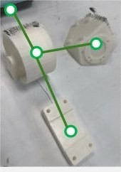
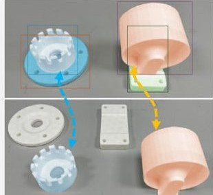
2
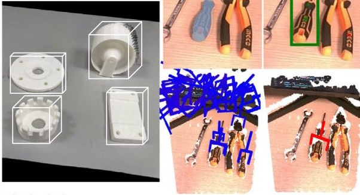
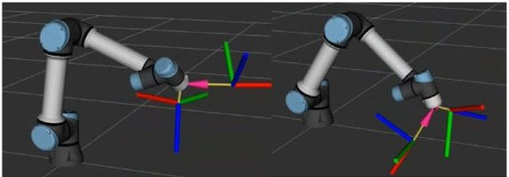
Watch: the labels in the 3D scene carry the same station names as the table and the main line at the top. No numbers yet.看：3D 場景裡的，和這張表、頁首主線條是同一組站名。這裡還沒有數字。
Four points about this route這條路上的四件事
- There is no trained W and no . The paper describes no step. , , and are used as released; AnyGrasp is called “” (p.5 left).沒有要的 W，也沒有 。全文沒有任何訓練步驟。、、、 都是拿現成的來用；AnyGrasp 論文自己寫「」（p.5 左欄）。 Not stated
- The only is inside at station 5 (KP 08). Its objective comes from [17]. The paper does not print it.全篇唯一的在第 5 站的 （KP 08）。目標式出自 [17]，論文沒有印。 External
- The paper names station 2 . §3.1 describes three stages of and no update, so “learning” here is a prompt chain, not .論文把第 2 站叫 。§3.1 寫的是三個階段的 ，沒有更新任何，所以這裡的 learning 是一串提示詞流程，不是。
- Calls that get the picture: the two (Eq. 1, ), the (Eq. 3, superscript VLM), and the (p.4 left). Calls without it: the , written with superscript and no picture among its inputs (Eq. 2), and the , whose takes text only (Fig. 2, Fig. 5).拿得到圖的呼叫：兩個 （式 (1)， ）、（式 (3)，上標 VLM）、（p.4 左欄）。拿不到圖的：，上標寫 ，輸入裡沒有圖（式 (2)）；還有 ，它的 只收文字（圖 2、圖 5）。
More, if asked (2)被問再講（2 條）
A readable plan between the model and the arm, not direct motion output模型和手臂之間隔著一份看得懂的計劃，而不是直接輸出動作
The paper does not run that comparison; Table 1 has no other method in it. Its stated reason is in §1: a 's answers on manufacturing tasks can contain wrong content and lack , so they are not fit to drive assembly directly (p.1 right). Its answer is the readable plan in the middle.論文沒有做這個比較，表 1 裡沒有別的方法。它自己的理由在 §1： 回答製造任務時會有錯的內容，也缺，不適合直接拿去驅動組裝（p.1 右欄）。它的做法就是中間那份看得懂的計劃。
Output of station 2 → input of every later KP: a list of . KP 02 defines a triple before we use one.第 2 站的輸出 → 後面每個 KP 的輸入：一串 。KP 02 先把 triple 定義清楚再往下用。
Triples, and the nodes N and edges E of a scene graphTriple，以及 scene graph 的節點 N 與邊 E
One assembly step is three words. Many steps together make a graph of dots and arrows.一個組裝步驟就是三個詞。很多步驟合起來，是一張有點、有箭頭的圖。
A writes one assembly step as three slots, ⟨subject, , object⟩ (p.3 left). Step 1 on my desk: ⟨black ink refill, inserted into, pen barrel with black clip⟩. 把一個組裝步驟寫成三格：⟨subject, , object⟩（p.3 左欄）。我桌上的第 1 步：⟨black ink refill, inserted into, pen barrel with black clip⟩。
- : the part that is moved. Here, the black ink refill.：拿起來移動的那個零件。這裡是黑色筆芯。
- : the word for how it joins. Here, inserted into.：寫「怎麼接」的那個詞。這裡是 inserted into。
- : the part it joins onto. Here, the pen barrel with the black clip.：subject 要接上去的那個零件。這裡是黑夾的筆管。
A is a drawing of dots and arrows. A is one dot: one part. An is one arrow between two parts, with the written on it. One gives one . We draw the arrow from subject to object. 是一張點和箭頭的圖。 是一個點，代表一個零件。 是兩個零件之間的一條箭頭，上面寫 。一條 就是一條 。箭頭我們從 subject 畫向 object。
| Symbol | What it is是什麼 | Shape / unit形狀／單位 | Kind種類 | Now (my desk scene)現在（我的桌面場景） |
|---|---|---|---|---|
| The plan as a graph: the half of the .寫成圖的計劃，也就是 的 那一半。 | a pair: (set of , set of )一對：（ 的， 的集合） | computed | 9 dots, 6 arrows9 個點、6 條箭頭 | |
| : the objects that appear in the .： 裡出現的物體。 | set of part names (text)零件名稱的（文字） | model | 9 parts: 2 barrels, 2 refills, 2 grips, spinner body, 2 caps9 件：筆管 2、筆芯 2、握把 2、陀螺本體、蓋子 2 | |
| : the action between those objects at step t.：這些物體之間、第 t 步的動作 。 | set of labelled arrows帶的箭頭的 | model | 6 , one per step6 條，一步一條 | |
| : which assembly step. Not seconds. KP 07 uses the same letter for camera frames.：第幾個組裝步驟，不是秒。KP 07 的相機也用同一個字母。 | whole number, no unit整數，沒有單位 | model | t = 1 … 6 |
Watch: each adds one arrow from its subject to its object, and the is the label on the arrow. Count N and E against the table above.看：每加一條 ，就多一條從 subject 指向 object 的箭頭， 寫在箭頭上。對著上面的表數 N 和 E。
| Where位置 | Slot 1第 1 格 | Slot 2第 2 格 | Slot 3第 3 格 | Brackets, word括號、用字 |
|---|---|---|---|---|
| §3.1, p.3 left | subject | object | ⟨ ⟩, | |
| Fig. 5, p.6 | Head Entity | Relation | Tail Entity | ( ), |
| §4.1, p.5 right | object name 1 | assembly relation | object name 2 | ( ), |
| §4.2, p.7 right | manipulated object | robot action | target object | < >, |
More, if asked (2)被問再講（2 條）
A graph rather than a numbered list of steps用圖、而不是編號的步驟清單
A list only gives the order. A graph also shows which part other parts attach to: on my desk each pen barrel receives two arrows. KP 04 uses exactly this. The reads the graph to find the part to start from (Eq. 2, p.3).清單只有先後。圖還看得出哪個零件是別人裝上去的對象：我桌上每支筆管各有兩條箭頭指進來。KP 04 用的就是這一點， 讀這張圖，找出該從哪個零件開始（式 (2)，p.3）。
Now we can read a and a graph → KP 03: who writes the first triples, and from what input (Eq. 1).現在看得懂 和圖了 → KP 03：第一批 triple 是誰寫的、吃什麼輸入（式 (1)）。
Stage 1: what each of the two Narrators reads and writes階段 1：兩個 Narrator 各讀什麼、寫什麼
Two model calls look at the same picture and the same . One writes where the parts are; the other writes how to put them together.兩次模型呼叫看同一張圖、同一份 。一個寫零件的位置關係，一個寫怎麼組起來。
- Purpose用途
- Turn one picture and one into a first description: which part is where, and which steps assemble the product.把一張圖和一份 變成第一版描述：零件彼此在哪裡、要用哪些步驟組起來。
- Input輸入
- The picture ν, the ϵ, the instruction .圖 ν、 ϵ、指示文字 。
- Output輸出
- As printed: κ steps, each with a subject, a and an object. In the of Fig. 5, one returns and the other returns short sentences.照印刷：κ 個步驟，每步有 subject、、object。照圖 5 的 ：一個 回 ，另一個回短句。
- Computed by誰算的
- A , called twice. The paper says “based on ” (p.3 left). Nothing is trained.，呼叫兩次。論文寫「based on 」（p.3 左欄）。沒有。
- Goes to交給
- Stage 2. The output becomes a graph Gnar1, which the reads (KP 04).階段 2。輸出轉成一張圖 Gnar1，給 讀（KP 04）。
| Symbol | What it is是什麼 | Shape / unit形狀／單位 | Kind種類 | Now (our run)現在（我們的實跑） |
|---|---|---|---|---|
| The stage-1 , written as one . The text has two: and .階段 1 的 ，式子寫成一個。正文其實有兩個： 和 。 | : picture and text in, text out：進圖和文字，出文字 | model | 2 calls per chain每條鏈呼叫 2 次 | |
| , not a power. It marks a call that receives the picture.，不是次方。標明這次呼叫有拿到圖。 | label標記 | setting | gpt-4o, gpt-4o-mini | |
| Visual input: an or a picture of the (§3, p.2 right).視覺輸入：，或現場的畫面（§3，p.2 右欄）。 | one image; size not stated一張影像；尺寸論文沒寫 | data | desk photo, scene 2 taken apart, 1600×900 px桌面照片，場景 2 拆開，1600×900 px | |
| The . The line under Eq. (1) calls it “examples in the part list”; §3.1 describes names and quantities.。式 (1) 下方那行寫的是「examples in the part list」；§3.1 說的是名稱與數量。 | text list文字清單 | data | 9 names, each ×19 個名稱，各 1 件 | |
| The instruction text sent with the picture (Fig. 5).跟圖一起送出去的指示文字（圖 5）。 | text文字 | setting | wording of Fig. 5, left圖 5 左邊的原文 | |
| Number of assembly steps.組裝步驟的數目。 | whole number; no value given for any product整數；論文沒有給任何產品的值 | model | our (): 6; run 1 wrote 7 step sentences我們的（）6； 第 1 次寫了 7 句步驟 | |
| Subject, , object of step i. The paper does not explain the hat; in common use it marks an estimate.第 i 步的 subject、、object。論文沒有解釋；一般用法是「估計出來的」。 | three pieces of text三段文字 | model | see the raw replies below見下面的原始回覆 | |
| Step number, from 1 to κ.步驟編號，1 到 κ。 | whole number整數 | model | 1 … 7 |
| Job in the text正文說的工作 | Geometric relations between objects. Examples given: above, below, right, left.物體之間的幾何關係。舉的例子：above、below、right、left。 | Assembly steps. Examples given: attach to, screw, go through, wrap.組裝步驟。舉的例子：attach to、screw、go through、wrap。 |
|---|---|---|
| in Fig. 5圖 5 的 | Bottom left. Gives the part names and quantities. Asks for (Head Entity, Relation, Tail Entity); both ends must be given names; the Relation is a word for location or direction; one set per region, no repeats.左下。給零件名稱與數量。要 (Head Entity, Relation, Tail Entity)；兩端要是給定的名稱；Relation 用描述位置或方向的詞；分區寫，不要重複。 | Top left. Gives the part names and quantities. Asks for one short sentence per step with a clear action, object and subject; steps per region; warns that quantities in the picture may differ from the list.左上。給零件名稱與數量。要每步一個短句，動作、、清楚；分區寫；提醒圖上的數量可能和清單不同。 |
| Output type輸出型別 | short sentences, not 短句，不是 |
Fig. 5The six , redrawn六份 （重繪）
Please provide an assembly steps of the product in the picture. The product contains these given part names and quantities: { retrieve information}. The assembly steps contains assembly relations of these given parts. Each step should be a short sentences with very clear action type, object in these given parts, and subject in these given parts. If the image contains different assembly regions, give the assembly steps in each region. Pay attention to the quantity of the parts in the image, as it may be a bit different from the given quantity.
Please analyze the object relationship in the image. The image contains these given object names and quantities: { retrieve information}. Identifying entities, and determining the relationships between them to form a (Head Entity, Relation, Tail Entity). The Head Entity and Tail Entity are in the given object names. The Relation uses terms that can describe location, and direction information. If the image contains different object regions, give the triplets in each region and avoid repeat them.
From the relationship list and initial assembly steps, can you identify which entity is the base if I want to assemble this product? Please give me the candidates which is most suitable as .
From the initial assembly steps and relationship lists of the product. If I want to assembly the product form this benchmark: {}, can you reorganize the sequential assembly steps in one pipeline? Each step should be a short sentences with very clear action type, object in these given parts, and subject in these given parts. Please avoid repeat the assembly steps.
You are a text relationship processing engineer. Your task is to extract in the format of (Head Entity, Relation, Tail Entity) from the given assembly steps. Please strictly adhere to the following five policies when processing the text:
(1) Exact Triplet Extraction: Ensure that each step has a clear Head Entity, Relation, and Tail Entity.
(2) Quantity Attention: Pay attention to the quantity of entities and relationships.
(3) Correct Relations: Ensure that the Relation uses terms only from the following list: "attached to", "wrapping", "inside", "screw", "hanging from", "goes through", "inserted into", "", "below", "above". Replace incorrect Relations in the triplets with appropriate terms from this list.
(5) If the Head Entity or Tail Entity of a text includes two entities or is plural, please separate them.
(4) Policy Adherence: Adhere strictly to these policies to ensure consistency and in the triplet extraction process.
Here are Six Examples:
…. P45
You are a text processing engineer. Your task is to extract in the format of (Head Entity, Relation, Tail Entity) from the given assembly steps. Please strictly adhere to the following three policies when processing the text:
(1) Extract triplets from the text even if there is additional information.
(2) Identify if the assembly steps are repeated multiple times and retain only the final assembly steps.
(3) Adhere strictly to these policies to ensure consistency and in the triplet extraction process.
Here are Six Examples
… P45
What we ran. Picture: my desk, scene 2 taken apart: two pens and a fidget spinner, 9 parts. Models: gpt-4o (the reported gpt-4o-2024-08-06), 4 chains; gpt-4o-mini (gpt-4o-mini-2024-07-18), 10 chains. Time: 2026-11-11, 20:17 to 20:42 UTC. : API default. : the wording of Fig. 5 with our 9-part list. The six examples of the extraction prompt are not printed, so I used two of my own (flashlights, not on the desk).我們跑了什麼。圖：我的桌面，場景 2 拆開的樣子，兩支筆和一個指尖陀螺，共 9 件。模型：gpt-4o（ 回報 gpt-4o-2024-08-06）4 條鏈；gpt-4o-mini（gpt-4o-mini-2024-07-18）10 條鏈。時間：2026-11-11，20:17 到 20:42 UTC。溫度：API 預設。：圖 5 的原文， 換成我們的 9 件。抽取 prompt 的六個例子沒有印出來，我用自己寫的兩個例子（手電筒，不在桌上）。 Local run
Not the paper's setting: a photo, not one of its 127 drawings; one scene; at most 5 runs per setting. This is not Table 1.和論文不同的地方：是照片，不是那 127 張；只有一個場景；每種設定最多 5 次。這不是表 1。
Watch, against Eq. (1): the holds ϵ, our 9 names. The returns 6 in 3 regions, with the words contains, left of, above. The returns 7 sentences (4 for the pens, 3 for the spinner), so κ = 7 here against 6 in our .對著式 (1) 看： 裡有 ϵ，就是我們的 9 個名稱。 回 6 條 ，分 3 區，用的詞是 contains、left of、above。 回 7 句（筆 4 句、陀螺 3 句），所以這次 κ = 7，是 6。
Measured: outside the list. The extraction in Fig. 5 allows ten relation words (attached to, screw, inserted into and seven more; all ten are listed in KP 05). We counted the words that fall outside them.實測：清單外的。圖 5 的抽取 只准用十個關係詞（attached to、screw、inserted into 等，十個在 KP 05 全部列出）。我們數了落在清單外的詞。 Local run
| Call哪一次呼叫 | gpt-4o | gpt-4o-mini | Words seen出現的詞 |
|---|---|---|---|
| . Its has no list.。它的 沒有清單。 | 21 of 30 , 4 runs30 條裡 21 條，4 次 | 59 of 65 , 10 runs65 條裡 59 條，10 次 | contains, left of, next to, has |
| (KP 05). Its carries the list.（KP 05）。它的 有清單。 | 1 of 4 runs; 1 of 36 4 次裡 1 次；36 條裡 1 條 | 7 of 10 runs; 20 of 75 10 次裡 7 次；75 條裡 20 條 | placed, sliding onto, secured to, capped with |
How to read it. The breaks no rule: it was asked for location and direction words, and the paper's own examples include right and left. The was told to use only the ten words. The smaller model still left the list in 7 of its 10 runs. Counts are from site/data/vlm/summary.json.怎麼讀。 沒有違規： 要它寫位置和方向的詞，論文自己舉的例子就有 right、left。 的 prompt 規定只能用那十個詞，較小的模型 10 次裡還是有 7 次用了清單外的詞。次數取自 site/data/vlm/summary.json。 Derived
Fig. 2 with several , redrawn多個 的 （重繪）
Stage 1階段 1
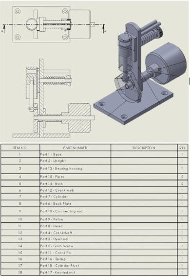
Visual input ν
ε
“Describe relations of parts in different image regions”
OUTPUT
- Assembly Steps:
- Region 1: 1. Assembling the Cylinder 2. xxxx
- Region 2: 1. Assembling the Cylinder
“Describe assembly steps in different image regions”
Gnar1
Stage 2階段 2
“Retrieve base in graph to find ”
OUTPUT
- Assembly Benchmarks:
- Candidate 1
- Candidate 2
- Candidate 3
“Organize assembly steps based on information”
OUTPUT
- Step 1: Place the *Box base* on a surface.
- Step 2: Attach the *Cylinder cap* to one end of the **Cylinder base**.
- Step 3: …
Stage 3: triple-check review階段 3：triple-check review
“Divide TEXT into (subject, , object)”
OUTPUT
- Step 1: (mounting base plate, place, base plate)
- Step 2: (mounting brackets, align, holes of base plate)…
Analysis
“Flat surface does not exists in images”
OUTPUT
- Step 1: (mounting base plate, place, base plate)
- (mounting brackets, align, holes of base plate)…
Analysis
“The sene contains a total of 4 bolts”
OUTPUT
- …
- Step 2: (cylinder body, place to, mounting brackets)
- (bolt, insert, holes of mounting brackets) 3 times …
Analysis
“Action ‘place to’ is not ”
OUTPUT
- …
- Step 2: (cylinder body, place, mounting brackets)
- (bolt, insert, holes of mounting brackets) 3 times …
Summary
- …(mounting base plate, place, flat surface)
- (mounting brackets, align, holes of base plate)
- (cylinder body, place, mounting brackets)
- (bolt, insert, holes of mounting brackets) 4 times …
More, if asked (2)被問再講（2 條）
A as input, instead of letting the name the parts給 當檢索資訊，而不是讓 自己認零件
The paper's reason: the list of names and quantities is matched against the objects in the picture, to hold down made-up parts (p.2 right). It reports no measurement of this, for example the number of wrong part names with and without the list.論文的理由：拿名稱和數量去對圖上的物體，壓低憑空冒出來的零件（p.2 右欄）。但它沒有量過，例如有清單和沒清單各錯幾個零件名，沒有這種數字。 Not stated
Output of this step → input of KP 04: the relation and the step sentences, kept as the graph Gnar1. Nothing yet says which part to start from.這一步的輸出 → KP 04 的輸入：關係 和步驟句子，存成圖 Gnar1。到這裡還沒有人說該從哪個零件開始。
Stage 2: finding the base first, and how much it changes階段 2：先找基準，以及它改變了多少
Stage 1 gave steps but no starting part. Stage 2 picks the part to start from, then rewrites the steps from there.階段 1 給了步驟，卻沒說從哪個零件開始。階段 2 先挑出起點零件，再從它重排步驟。
The , or base, is the part you start from: it stays put and the other parts are put onto it. For a pen it is the barrel. You cannot insert a refill into a barrel that is not there yet. The paper writes the base as σ (p.3 right).（，也叫 base）是開始組裝的那個零件：它不動，其他零件往它身上裝。一支筆的基準是筆管，筆管還沒就位，筆芯沒有地方可以插。論文把基準記成 σ（p.3 右欄）。
- Purpose用途
- Eq. (2), the : read the stage-1 graph, follow its arrows as paths, and name the base σ.式 (2)，：讀階段 1 的圖，沿著箭頭找出路徑，指出 σ。
- Input輸入
- (Fig. 5, top middle) and the graph Gnar1. No picture.（圖 5 中上）和圖 Gnar1。沒有圖片。
- Output輸出
- As printed, a chain of objects r1 → … → rj. The text then reads from it a path ϱ and the base σ. In Fig. 2 the output box holds Candidate 1, 2, 3.照印刷是一串物體 r1 → … → rj。正文再從中讀出路徑 ϱ 和 σ。圖 2 的輸出框寫的是 Candidate 1、2、3。
- Computed by誰算的
- An : a model call with text only.：只給文字的模型呼叫。
- Goes to交給
- Eq. (3).式 (3)。
| Symbol | What it is是什麼 | Shape / unit形狀／單位 | Kind種類 | Now (our run 1)現在（我們的 第 1 次） |
|---|---|---|---|---|
| The . “Bsear” is the printed spelling. : text only.。印刷就是拼成「Bsear」。 ：只吃文字。 | : text in, text out：進文字，出文字 | model | 1 call, no image sent呼叫 1 次，沒有送圖 | |
| The graph made from the stage-1 output.階段 1 的輸出轉成的圖。 | graph: and 圖： 和 | computed | sent as text: 6 relation and 7 step sentences以文字送出：6 條關係 和 7 句步驟 | |
| Not defined in the paper. I read it as “produces”, not “implies”.論文沒有定義。我讀成「產生」，不是「推得」。 | — | — | — | |
| Objects present in the visual input. j is not defined.視覺輸入裡出現的物體。j 沒有定義。 | part names (text)零件名稱（文字） | model | the reply gives no single chain回覆沒有寫成一條鏈 | |
| A path through the graph. The paper's example runs from a cylinder cap, through “attached to”, to a cylinder body, and on to a wooden plate.圖上的一條路徑。論文的例子從 cylinder cap 經過「attached to」到 cylinder body，一路到 wooden plate。 | ordered list of names and 名稱與 的有序串 | model | see Graph見 Graph 分頁 | |
| The : the part to start from.：開始組裝的零件。 | one (Fig. 2 shows three candidates)一個 （圖 2 畫了三個候選） | model | three, one per region: both pen barrels and the spinner body三個，一區一個：兩支筆管和陀螺本體 |
- Purpose用途
- Eq. (3), the : rewrite the assembly steps as one sequence that starts from σ.式 (3)，：把組裝步驟重排成一條從 σ 開始的流程。
- Input輸入
- The picture ν, the path ϱ, and (Fig. 5, bottom middle; the base is pasted in at the braces).圖 ν、路徑 ϱ、（圖 5 中下；貼在大括號的位置）。
- Output輸出
- As printed, . The in Fig. 5 asks for one short sentence per step.照印刷是 。圖 5 的 要的是每步一個短句。
- Computed by誰算的
- A : this call gets the picture again.：這次呼叫又拿到圖。
- Goes to交給
- Stage 3, the (KP 05).階段 3 的 （KP 05）。
| Symbol | What it is是什麼 | Shape / unit形狀／單位 | Kind種類 | Now (our run 1)現在（我們的 第 1 次） |
|---|---|---|---|---|
| The stage-2 . The text calls it ; Fig. 2 labels the same box .階段 2 的 。正文叫 ；圖 2 同一個框標成 。 | : picture and text in, text out：進圖和文字，出文字 | model | 1 call, image sent呼叫 1 次，有送圖 | |
| Same as in Eq. (1): the picture and the instruction text.和式 (1) 相同：圖與指示文字。 | image; text影像；文字 | data setting | same desk photo同一張桌面照片 | |
| From Eq. (2). ϱ is an . σ appears only in the condition on the right.來自式 (2)。ϱ 是；σ 只出現在右邊的條件裡。 | path; 路徑； | model | the whole reply is pasted into the 整段 回覆貼進 | |
| Which steps to keep. The paper does not define this set. I read it as: the steps met when walking from σ along ϱ.留下哪些步驟。論文沒有定義這個。我讀成：從 σ 沿著 ϱ 走，一路遇到的步驟。 | not defined沒有定義 | — | 7 step sentences7 句步驟 |
Watch, against Eq. (2) and (3): σ is the the arrows point into, and ϱ runs along the arrows to it. In the raw there is no image, only the stage-1 text; the reply names three bases.對著式 (2)(3) 看：σ 是箭頭指進去的那個 ，ϱ 沿著箭頭走到它。原始 裡沒有圖，只有階段 1 的文字；回覆點出三個。
Table 2: with and without the 表 2：有 和沒有
Why a simulation at all? The paper's reason: the drawing is annotated by people, such can be wrong, and that makes it hard to judge a plan from the pictures alone (p.6 right). So it also checks plans by carrying them out in a , [19][20].為什麼要另外做模擬？論文的理由是：是人標的，人工可能有錯，只憑圖很難判斷一份計劃對不對（p.6 右欄）。所以它把計劃放進器 [19][20] 裡實際組一次。 Paper
Who does what in this test: the supply the task plan, the order of the steps. How each part moves is found by a [21][22]. It tries moves in an action space of six translations and six rotations, from the taken-apart state to the (p.6 right to p.7 left).這個測試裡誰做什麼： 給的是任務規劃，也就是步驟先後。每個零件怎麼移動，是 [21][22] 找出來的。它在六個、六個旋轉的動作空間裡一個一個試，從拆開的狀態走到組好的狀態（p.6 右欄到 p.7 左欄）。 Paper
So one cell of Table 2 measures the plan together with that search, not the plan alone.所以表 2 的每一格量的是「計劃加上這個搜尋」，不是計劃本身。 Derived
Fig. 4The five simulated products, rebuilt in 3D模擬用的五件產品，重建成 3D
Each product is run 20 times with the and 20 times without. A cell of Table 2 is the number of successes out of 20 (p.7).每件產品有 跑 20 次，沒有也跑 20 次。表 2 每格是 20 次裡成功幾次（p.7）。 Paper
| Product產品 | ||
|---|---|---|
| 1 | 12 | 17 |
| 2 | 18 | 20 |
| 3 | 19 | 20 |
| 4 | 13 | 18 |
| 5 | 7 | 15 |
Watch: every pair of bars goes up. The largest step is Product 5, from 7 to 15.看：每一組長條都往上。差最多的是 Product 5，從 7 到 15。
Totals, which the paper does not print: 12 + 18 + 19 + 13 + 7 = 69 of 100; with base 17 + 20 + 20 + 18 + 15 = 90 of 100.加總，論文沒有印： 12 + 18 + 19 + 13 + 7 = 100 次裡 69 次；有 base 17 + 20 + 20 + 18 + 15 = 100 次裡 90 次。 Derived
The gap for one product, tested against chance單一產品的差距與隨機變動的比較
With only 20 tries, two counts can differ by luck. gives p: the chance of a gap at least this large if the made no difference. A small p, by custom below 0.05, means luck alone is an unlikely explanation.只試 20 次，兩個次數本來就可能因為運氣而不同。 算的 p 是：假如 完全沒有作用，差距至少這麼大的機率。p 很小（慣例是低於 0.05），才說光靠運氣不太解釋得了。
| Symbol | What it is是什麼 | Shape / unit形狀／單位 | Kind種類 | Now (Product 5)現在（Product 5） |
|---|---|---|---|---|
| : successes, failures.：成功次數、失敗次數。 | counts次數 | data | 7, 13 | |
| : successes, failures.：成功次數、失敗次數。 | counts次數 | data | 15, 5 | |
| All tries: a + b + c + d.全部次數：a + b + c + d。 | count次數 | data | 40 | |
| A possible value of a when the 22 successes are dealt at random to the two groups of 20.把 22 次成功隨機分給兩組（各 20 次）時，a 可能出現的值。 | count次數 | computed | 2 … 20 | |
| Sum of Pr(x) over every x that is no more likely than what was seen.把機率不高於實際觀察值的那些 x 的 Pr(x) 全部加起來。 | probability, 0 to 1機率，0 到 1 | computed | 0.025 |
- Product 5: a = 7, b = 20 − a = 13, c = 15, d = 20 − c = 5, so n = 40 and a + c = 22.Product 5：a = 7、b = 20 − a = 13、c = 15、d = 20 − c = 5，所以 n = 40，a + c = 22。
- Chance of exactly this table: 77520 × 15504 ÷ 113380261800 = 0.0106.剛好是這張表的機率：77520 × 15504 ÷ 113380261800 = 0.0106。
- Add every table that is no more likely than this one: p = 0.025.把機率不高於它的表全部加起來：p = 0.025。
| Product產品 | p, p（） | ||
|---|---|---|---|
| 1 | 12/20 | 17/20 | ≈ 0.16 |
| 2 | 18/20 | 20/20 | ≈ 0.49 |
| 3 | 19/20 | 20/20 | 1.0 |
| 4 | 13/20 | 18/20 | ≈ 0.13 |
| 5 | 7/20 | 15/20 | ≈ 0.025 |
Taken one product at a time, only Product 5 is below 0.05. For the other four, a gap this size can come from sampling alone. And these are five tests at once: with a Bonferroni correction the is 0.05 / 5 = 0.01, and Product 5's 0.025 does not pass it either (Holm's method starts from the same 0.01). So no single product shows a difference that survives the correction.一件一件看，只有 Product 5 低於 0.05。其他四件，這麼大的差距光靠就可能出現。而且這是同時做五個：用 Bonferroni 校正，是 0.05 / 5 = 0.01，Product 5 的 0.025 也過不了（Holm 法的第一步同樣是 0.01）。所以校正之後，沒有任何一件產品的差距算得上顯著。 Derived
Our own with and without, on the desk photo. Each number is a mean over n runs of the share of the 6 found in the output (; KP 06 gives the formula). “Strict” needs the full part name. “No colour” ignores colour words.我們自己的有無對照，用桌面照片。每個數字是 n 次的平均： 6 條 裡，輸出對到幾成（，公式在 KP 06）。「嚴格」要零件全名相符；「不看顏色」忽略顏色字。 Local run
| Model, variant模型、設定 | n | Strict 嚴格 | Strict 嚴格 | No colour 不看顏色 |
|---|---|---|---|---|
| gpt-4o, gpt-4o， | 3 | 0.00 | 0.11 | 0.33 |
| gpt-4o, gpt-4o， | 1 | 0.00 | 0.17 | 0.33 |
| gpt-4o-mini, gpt-4o-mini， | 5 | 0.17 | 0.53 | 0.23 |
| gpt-4o-mini, gpt-4o-mini， | 5 | 0.07 | 0.27 | 0.23 |
Source: aggregates in site/data/vlm/summary.json. n is very small. For gpt-4o-mini the strict is 0.17 against 0.07, with a spread of 0.17 and 0.15 between runs, and the no-colour column is the same in both rows. We cannot call this a difference. Nor does gpt-4o-mini beat gpt-4o here: under strict names gpt-4o loses points because it writes “pen barrel” without saying which pen, and with colour words ignored gpt-4o scores higher (0.33 against 0.23). It is also a different measure from Table 2: text matched to an , not an assembly in a .來源：site/data/vlm/summary.json 的 aggregates。n 很小。gpt-4o-mini 的嚴格 是 0.17 對 0.07，各次之間的就有 0.17 和 0.15，不看顏色那一欄兩列相同。這樣不能說有差別。這裡也不是 gpt-4o-mini 比 gpt-4o 強：嚴格比名稱時 gpt-4o 失分，是因為它只寫「pen barrel」、不說是哪一支筆；不看顏色字時，gpt-4o 反而比較高（0.33 對 0.23）。量的東西也和表 2 不同：這裡是文字對答案，不是在模擬器裡組裝。
More, if asked (2)被問再講（2 條）
Skipping the base versus finding it, and the product that gains most跳過和先找基準的差別，以及差最多的產品
Stage 1 lists steps region by region and does not say which part goes down first. In Table 2 the gain is largest for Product 5: 15 − 7 = 8 more successes in 20. Why this product gains most cannot be answered from the paper: the products are unnamed and no failure is described.階段 1 是一區一區列步驟，沒說哪個零件要先放好。表 2 裡差最多的是 Product 5：15 − 7 = 20 次裡多成功 8 次。為什麼是這一件差最多，從論文答不出來：產品沒有名稱，也沒有描述任何一次失敗。 Not stated
Output of this step → input of KP 05: the steps reordered from σ, still written as sentences. Stage 3 cuts them into .這一步的輸出 → KP 05 的輸入：從 σ 重排過的步驟，還是句子。階段 3 把它們切成 。
Stage 3: from sentences to Gt, and what t counts階段 3：從句子到 Gt，以及 t 計的是什麼
One cuts the step sentences into . Others check them against the picture, the and the allowed words. What is left is the graph, one per step.一個 把步驟句子切成 ，其他幾個拿圖、、允許的詞來檢查。留下來的就是那張圖，一步一條 。
| Symbol | What it is是什麼 | Shape / unit形狀／單位 | Kind種類 | Now (desk video)現在（桌面影片） |
|---|---|---|---|---|
| : the number of the assembly step. The paper says only “in time step t”.：第幾個組裝步驟。論文只寫「in time step t」。 | whole number, no unit整數，沒有單位 | model | ||
| : the action between the objects at step t.：第 t 步、物體之間的動作 。 | labelled arrows帶的箭頭 | model | ||
| : the objects in the .： 裡的物體。 | set of part names零件名稱的 | model | 9 parts9 件 |
The paper does not say whether Et holds only the of step t or every edge up to step t. On the stage the graph grows: at t = 3 it shows three edges. That is my reading.Et 是只有第 t 步那一條，還是到第 t 步為止的全部，論文沒有說。舞台上的圖是累加的：t = 3 時有三條 。這是我的讀法。 My view
- Purpose用途
- Turn the stage-2 sentences into that follow the rules, then correct what the earlier got wrong.把階段 2 的句子變成守規則的 ，再修正前面幾個 弄錯的地方。
- Input輸入
- : the step sentences, as text. : the , plus the picture ν, the allowed relations and the (p.4 left).：步驟句子，純文字。：，加上圖 ν、允許的、（p.4 左欄）。
- Output輸出
- Summarized , arranged as Gt = (Nt, Et).彙總後的 ，排成 Gt = (Nt, Et)。
- Computed by誰算的
- Prompted model calls. For the the paper does not state how many there are, which model they use, or their .帶 的模型呼叫。 有幾個、用哪個模型、prompt 是什麼，論文都沒寫。
- Goes to交給
- Scoring against an (KP 06), and the , where names are matched to detected parts (KP 07).拿去對計分（KP 06）；還有 ， 的名稱要對上偵測到的零件（KP 07）。
The extraction rules printed in Fig. 5圖 5 印出來的抽取規則
- Top right, five policies: every step has one clear Head Entity, Relation and Tail Entity; watch the quantities; the Relation may only be one of ten words, and any other word is replaced; split an entity that is plural or names two things; follow these policies strictly.右上，五條規則：每一步要有清楚的 Head Entity、Relation、Tail Entity；注意數量；Relation 只能用十個詞，別的詞要換掉；實體是複數或包含兩樣東西時拆開；嚴格遵守這些規則。
- The ten allowed , as spelled in Fig. 5: attached to, wrapping, inside, screw, hanging from, goes through, inserted into, , below, above.十個允許的 Relation，照圖 5 的拼法：attached to、wrapping、inside、screw、hanging from、goes through、inserted into、、below、above。
- Bottom right, three policies: extract even if the text has extra information; if steps are repeated, keep only the final ones; follow these policies strictly. Which uses it is not stated; we read it as the Summary step that merges the three Analysis outputs (see Fig. 5 in KP 03).右下，三條規則：文字裡有多餘資訊也要抽出 ；步驟重複時只留最後的；嚴格遵守這些規則。論文沒寫給哪個 ；我們讀成把三個 Analysis 的輸出合起來的 Summary 那一步（見 KP 03 的圖 5）。
| In Fig. 2 (p.3)圖 2 上（p.3） | In the text (p.4 left)正文（p.4 左欄） | |
|---|---|---|
| Analysis 1 | Says there is no flat surface in the images.說圖裡沒有 flat surface。 | Identifies that the Wingnut is absent and finds the missing (wingnut, insert, pipe).指出少了 Wingnut，找出漏掉的 (wingnut, insert, pipe)。 |
| Analysis 2 | Says the scene has 4 bolts in total.說場景裡一共有 4 個 bolt。 | Adds such as (screw, fix, cylinder body).補上 (screw, fix, cylinder body) 這類 。 |
| Analysis 3 | Says the action place to is not in the . Its output changes (cylinder body, place to, mounting brackets) to place.說 place to 這個動作不在 裡。輸出把 (cylinder body, place to, mounting brackets) 改成 place。 | Changes grasp to into grasp.把 grasp to 改成 grasp。 |
t = 1 … 6 on the desk video桌面影片上的 t = 1 … 6
Watch, against Gt: each of the six segments on the timeline is one . In the symbol table above, t and Et change as the video moves.對著 Gt 看：時間軸上六段，每段是一條 。影片走到哪，上面符號表裡的 t 和 Et 跟著變。
| t | Seconds秒 | added (our )加上的 （我們的） | Video影片 | Graph圖 |
|---|---|---|---|---|
| 1 | 2.0–12.0 | ⟨black ink refill, inserted into, pen barrel with black clip⟩ | ||
| 2 | 12.0–20.0 | ⟨black rubber front grip, screw, pen barrel with black clip⟩ | ||
| 3 | 20.0–26.0 | ⟨purple ink refill, inserted into, pen barrel with red clip⟩ | ||
| 4 | 26.0–34.5 | ⟨red rubber front grip, screw, pen barrel with red clip⟩ | ||
| 5 | 36.0–41.0 | ⟨stud cap, goes through, spinner body with bearing⟩ | ||
| 6 | 41.0–47.5 | ⟨threaded cap, screw, stud cap⟩ |
The was written before any model was run and then checked against the video. Source: site/data/sceneB_gt.json.是跑任何模型之前寫的，之後對過影片。來源：site/data/sceneB_gt.json。
Watch, against the table above: returns 7 for 6 steps. Both barrels are written just pen barrel, with no colour, and tip and bearing are not names on our . This is the kind of slip the Analysis stage is meant to catch.對著上面的表看：6 步， 回了 7 條 。兩支筆管都只寫 pen barrel，沒有顏色；tip 和 bearing 不是我們 上的名稱。Analysis 階段要抓的就是這類問題。 Local run
Not the paper's setting: hands, not a robot; a phone with no depth; pens and a spinner, not the . Our chain stops at the . We ran no , because the paper prints no for them.和論文不同的地方：是人手，不是機器人；手機沒有深度；零件是筆和陀螺，不是。我們的流程停在 ，沒有跑 ，因為論文沒有印它們的 。
Why a third stage at all? The paper gives three examples of what is still wrong when stage 3 starts (p.4 left). The may say the “Wingnut” is missing from the drawing. “table”, “cover” and “screw” are absent from the (I read this as: they appear in the output). And “grasp” may be split into “grasp to”, which breaks the rule for relations. The read the drawing ν, the relation list and the part list once more and repair such lines.為什麼還要第三階段？論文舉了進到第三階段時還留著的三種錯（p.4 左欄）。 可能說圖上少了「Wingnut」。「table」「cover」「screw」不在上（我讀成：輸出裡寫了它們）。「grasp」可能被拆成「grasp to」，不合 relation 的規則。 把 ν、relation 清單和零件清單再對一次，把這幾種句子修掉。 Paper
Fig. 2Bottom row: stage 3, redrawn最下面一排：階段 3（重繪）
“Divide TEXT into (subject, , object)”
OUTPUT
- Step 1: (mounting base plate, place, base plate)
- Step 2: (mounting brackets, align, holes of base plate)…
Analysis
“Flat surface does not exists in images”
OUTPUT
- Step 1: (mounting base plate, place, base plate)
- (mounting brackets, align, holes of base plate)…
Analysis
“The sene contains a total of 4 bolts”
OUTPUT
- …
- Step 2: (cylinder body, place to, mounting brackets)
- (bolt, insert, holes of mounting brackets) 3 times …
Analysis
“Action ‘place to’ is not ”
OUTPUT
- …
- Step 2: (cylinder body, place, mounting brackets)
- (bolt, insert, holes of mounting brackets) 3 times …
Summary
- …(mounting base plate, place, flat surface)
- (mounting brackets, align, holes of base plate)
- (cylinder body, place, mounting brackets)
- (bolt, insert, holes of mounting brackets) 4 times …
More, if asked (2)被問再講（2 條）
after the 之後再加
The paper's reason: at this point the results often carry errors, because the are not always accurate and can overlook the rules (p.4 left). Our demo stops at the extractor because the paper prints no for the , so we could not run them as the paper did; even so we saw words outside the list in 8 of 14 extractor outputs. How much the Analysis agents repair is not measured in the paper.論文的理由：到這一步結果常常有錯，因為 不一定準，也會漏掉規則（p.4 左欄）。我們的演示停在抽取這一步，因為論文沒有印 的 ，沒辦法照論文的方式跑；就算只到這裡，14 次輸出裡也有 8 次用了清單外的詞。Analysis agent 能修掉多少，論文沒有量。
Output of this step → input of KP 06: an ordered list of , Gt. KP 06 scores it against an .這一步的輸出 → KP 06 的輸入：有順序的一串 ，也就是 Gt。KP 06 拿它對打分數。
Scoring a plan: 30.25 and “about 60%” are different numbers計劃怎麼計分：30.25 和「約 60%」不是同一個數
The planner's output is a list of . This step compares that list with an answer list and gives the 24 numbers of Table 1.規劃的輸出是一串 。這一步拿它和一份答案比，得到表 1 的 24 個數字。
What is scored: 127 被計分的是什麼：127 張
The test set is 127 of mechanical products (p.5 right; samples in the top half of Fig. 4, shown in KP 04). The authors collected them with Google searches on key terms such as ball screw, bearing, bolt, bracket, brake, centrifugal clutch, connector, engine, , motor, pneumatic cylinder, spring and others.測試用的是 127 張機械產品的（p.5 右欄；樣本在圖 4 上半，KP 04 放過）。作者用 ball screw、bearing、bolt、bracket、brake、centrifugal clutch、connector、engine、、motor、pneumatic cylinder、spring 等關鍵詞在 Google 搜尋蒐集。 Paper
The paper says the products cover six common ways of joining parts: plug-in, pin, screw, key, buckle, and belt or cable. It also says the drawings come in many styles and viewing angles.論文說這些產品涵蓋六種常見的連接方式：plug-in、pin、screw、key、buckle、belt／cable；也說圖的畫法和視角各式各樣。 Paper
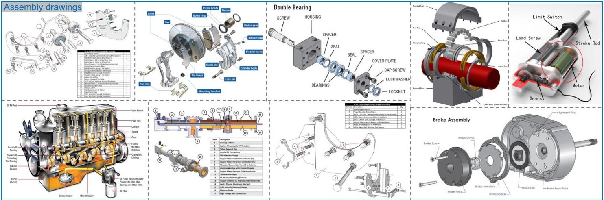
The answer list was made in two passes. first names the parts, counts them and drafts the ordered relations. People then review and correct the draft. Each answer is a sequence of (object name 1, assembly relation, object name 2), as in Fig. 6.分兩輪做。先由 認出零件名稱與數量，起草有順序的組裝關係。再由人檢查、修正。每份答案是一串 （object name 1, assembly relation, object name 2），樣子見圖 6。 Paper
Two words first. is the answer list of for one drawing. is the share of that answer list that the model got back.先定義兩個詞。 是一張的，也是一串 。 是這份答案裡，模型答回來的比例。
The paper defines its metrics in one sentence of text (p.5 right, last lines, to p.6 left, top). R is the share of correctly identified for one task. is the mean of R over all tasks. There are three : , @Pair and @Action count a when the whole , the object pair, or the object-relation matches.論文只用一句文字定義指標（p.5 右欄末到 p.6 左欄首）。R 是單一任務裡認對的比例。 是各任務的 R 再平均。另有三個 （）：@Triple、@Pair、@Action 分別要整條 、物體對、物體加關係對上才算中。
Two different R in this talk: here R is , a number from 0 to 1. In KP 08, R is a 3×3 .這份報告有兩個 R：這裡的 R 是 ，0 到 1 的一個數；KP 08 的 R 是 3×3 的。
- Purpose用途
- Turn “how close is the predicted plan to the answer” into one number per .把「預測的計劃離答案多近」變成每個一個數。
- Input輸入
- Predicted and triples of one task.一個任務的預測 與 triple。
- Output輸出
- , , for the task; over M tasks.這個任務的 、、；M 個任務的 。
- Computed by誰算的
- . No model is involved.，沒有模型。
- Goes to交給
- Table 1.表 1。
| Symbol符號 | What it is是什麼 | Shape / unit形狀／單位 | Kind種類 | Now目前值 |
|---|---|---|---|---|
| Predicted of one task一個任務的預測 | list of ; count一串 ；條數 | model | ||
| of the same task同一個任務的 | list of ; count一串 ；條數 | data | ||
| : which parts of a must be equal： 的哪幾格要相同 | / Pair / Action | setting | 3 levels (paper)3 種（論文） | |
| Answer matched one to one at level k在層級 k 一對一配到的答案 | count條數 | computed | ||
| at level k. Not the R of KP 08層級 k 的 。不是 KP 08 的 R | 0–1; Table 1 prints it ×100, in %0–1；表 1 乘 100，單位 % | computed | ||
| Number of tasks. What one task is: not stated任務數。一個任務指什麼：論文沒寫 | count個數 | data | not stated | |
| Mean of the M per-task R valuesM 個任務的 R 取平均 | 0–1; Table 1 in %0–1；表 1 用 % | computed | none: our run is one task無：我們只有一個任務 |
- Write each as (s, p, o): subject, , object. The key says what must be equal. This choice is my reading; the paper gives only the three names.把每條 寫成 (s, p, o)：、、。key 決定哪幾格要相同。這個選法是我的讀法，論文只給了三個名字。
- Count and divide by the number of answers. Toy case with 2 answers: one word differs, so 1 of 2 match, = 1/2 = 0.5, and = 2/2 = 1.數的條數，除以答案條數。玩具例：答案 2 條，其中一條的用詞不同，整條對上的有 1 條， = 1/2 = 0.5；物體對兩條都對， = 2/2 = 1。
- : average over tasks. Four toy tasks with = 1, 0.5, 0, 1 give mR = (1 + 0.5 + 0 + 1) / 4 = 0.625.：對任務取平均。四個玩具任務的 是 1、0.5、0、1，mR = (1 + 0.5 + 0 + 1) / 4 = 0.625。 Derived
Four readings of the Action key, checked against Table 1 and Fig. 6Action 的 key 有四種讀法，拿表 1 和圖 6 來檢驗
The paper names the three levels in one phrase, “the entire , object pair, and object-relation” (p.5 right – p.6 left), and nothing more. Our scoring uses keyAction = (p, {s, o}). Three other readings fit the same words. Two facts in the paper narrow them down: in Table 1 the Action cells of the and rows sit next to the Pair cells, about twice the Triple cells (GPT-4o: 30.25, 58.03, 58.11); and Fig. 6 colours its predicted lines by kind of error.論文只用一句話點出三個層級：「the entire , object pair, and object-relation」（p.5 右 – p.6 左），沒有更多。我們的計分用 keyAction = (p, {s, o})，但同一句話還容得下另外三種讀法。論文裡有兩件事可以拿來篩：表 1 與 兩列的 Action 欄緊挨著 Pair 欄，約是 Triple 欄的兩倍（GPT-4o：30.25、58.03、58.11）；圖 6 用顏色標出每條預測錯在哪裡。
| Reading讀法 | keyAction | Fig. 6, 17 predicted lines: Action 圖 6 的 17 條預測：Action | Against Table 1 ( and rows: Action ≈ Pair ≈ 2 × )對照表 1（ 與 兩列：Action ≈ Pair ≈ 2 × ） |
|---|---|---|---|
| relation + both objects, either order (ours)關係 + 兩個物體，順序不計（我們用的） | (p, {s, o}) | 11, the same as 11，和 一樣 | No. A beyond needs subject and object swapped; to reach Table 1, about 28 of every 100 triples would have to come back swapped (58.11 − 30.25). Fig. 6 shows no swapped line, if the figure is read as printed (see below).不符合。要比 多，只能靠對調；要做到表 1，每 100 條約有 28 條得是以對調的形式答回來（58.11 − 30.25）。照圖上印的讀，圖 6 一條對調的都沒有（見下文）。 |
| subject + relation + 關係 | (s, p) | 14 | Yes. The three cyan lines (same subject and relation, another object) become Action , and the three purple lines (same two parts, another relation) are Pair hits. Fig. 6 then gives 11, Pair 14, Action 14, the pattern of Table 1.符合。三條（與關係相同、換了）算 Action ，三條紫勾（兩個零件相同、關係換了）算 Pair 命中。圖 6 於是得到 11、Pair 14、Action 14，和表 1 的樣子一樣。 |
| relation + object關係 + | (p, o) | 11 | No, for the same reason as the first row on Fig. 6.不符合，在圖 6 上和第一列同樣的理由。 |
| relation only只看關係 | (p) | 14 | The counts fit, but any line with a common relation such as attached to would ; that is hard to call “object-relation”.數字符合，但任何一條用了 attached to 這類常見的預測都會，很難叫做「object-relation」。 |
On our own 14 scene-B runs the choice matters as much. Mean with strict names: 0.08 under (p, {s, o}), 0.33 under (s, p), 0.14 under (p, o), 0.46 under (p). With colour words ignored: 0.26, 0.35, 0.37 and 0.46.在我們自己的 14 次場景 B 實跑上，選哪一種一樣影響很大。 的平均，嚴格比名稱時：(p, {s, o}) 0.08、(s, p) 0.33、(p, o) 0.14、(p) 0.46；不看顏色字時依序是 0.26、0.35、0.37、0.46。 Derived
One caveat. The counts above take Fig. 6 as printed, where every green line is identical to an answer line. The text says green marks lines where subject and object are confused (p.6), which the figure does not show (flaw P53, kept for questions). If the text is right and the green lines are swaps, (p, {s, o}) also fits Table 1.要先說一個前提。上面的計數是照圖 6 印出來的樣子算的：每一條都和某條答案完全相同。正文卻說綠勾表示和弄混（p.6），圖上看不到這種情形（缺點 P53，留給提問時講）。如果正文才對、綠勾其實是對調，那 (p, {s, o}) 也符合表 1。
My reading: going by the figure as printed, (s, p) fits both Table 1 and the colours of Fig. 6, and (p) fits the counts only by matching almost any line. Going by the text's legend, (p, {s, o}) fits as well. The paper settles neither, so nobody can recompute its Action column; that is one more place where the metric is not defined well enough to check. The stage keeps scoring with (p, {s, o}), so the numbers shown earlier stay comparable.我的讀法：照圖上印的看，同時符合表 1 和圖 6 顏色的是 (s, p)；(p) 的數字也對得上，但那是因為幾乎每條都會。照正文的圖例看，(p, {s, o}) 也說得通。論文兩邊都沒交代清楚，所以沒有人能重算它的 Action 欄，這又是一處指義不足以查核的地方。舞台的計分仍用 (p, {s, o})，讓前面的數字可以互相比較。 My view p.5 right – p.6 left; Table 1, p.6; Fig. 6, p.6
| Model模型 | ||||||
|---|---|---|---|---|---|---|
| 30.25 | 28.35 | 58.03 | 62.49 | 58.11 | 59.95 | |
| 22.85 | 19.44 | 53.10 | 56.90 | 48.51 | 51.76 | |
| & | 7.56 | 5.82 | 30.76 | 35.12 | 25.57 | 27.96 |
| & | 3.79 | 3.09 | 12.23 | 12.32 | 8.75 | 10.17 |
Watch the row: two cells near 30, four cells near 60. Table 1 is on p.6; the has 127 drawings (p.5 right).看 那一列：兩格在 30 附近，四格在 60 附近。表 1 在 p.6；是 127 張（p.5 右）。
How to read the two Llama rows: takes text only. For these rows a second model, or [23][24], first turns the drawing into text, and Llama3.1 works from that text (p.5 right). That is why one row of Table 1 names two models.兩列 Llama 怎麼讀： 只能處理文字。這兩列先由另一個模型（ 或 [23][24]）把轉成文字，Llama3.1 再照文字做（p.5 右欄）。所以表 1 的一列才會寫兩個模型。 Paper
- The text says the overall is “approximately 60%” (p.6 left). It names no column.正文說整體 「approximately 60%」（p.6 左），沒有說是哪一欄。
- , whole : = 30.25, mR@Triple = 28.35. 整條 ： = 30.25，mR@Triple = 28.35。
- , object pair: 58.03 and 62.49. Object plus relation: 58.11 and 59.95. 物體對：58.03 與 62.49。物體加關係：58.11 與 59.95。
- So “about 60%” fits the four Pair and Action cells. The whole-triple score is about 30%. They are not the same thing.所以「約 60%」對得上的是 Pair 與 Action 那四格。整條 是 30% 左右。兩者不是同一件事。
- The other three models are below 60 in every cell; the highest is 's , 56.90.另外三個模型每一格都不到 60；最高是 的 ，56.90。
More, if asked (2)被問再講（2 條）
Local run (the reported gpt-4o-2024-08-06) on one photo of my desk, scene 2 taken apart, with the of Fig. 5, on 2026-11-11 20:17 UTC. I wrote the 6 answer before running any model. Not Table 1: a photo instead of a drawing, one task, and my own examples in the extractor prompt because the paper's six are not printed.Local run （ 回報 gpt-4o-2024-08-06），照片是我桌上場景 2 的，照圖 5。時間是 2026-11-11 20:17 UTC。6 條答案是我在跑任何模型之前寫的。這不是表 1：輸入是照片不是、只有一個任務， 的例子是我自己寫的，因為論文那六個沒有印。
Watch: which of the 7 predicted lines light up against the 6 answers, and the three numbers , , below.看：7 條預測裡哪幾條對上 6 條答案，以及下面 、、 三個數。
- Count: the answer has 6 , the model wrote 7.先數：答案 6 條，模型寫了 7 條。 /
- Strict names. The model wrote “pen barrel” with no clip colour; the answer says “pen barrel with black clip”. No whole matches: = 0/6 = 0.嚴格比名稱。模型只寫「pen barrel」，沒有筆夾顏色；答案是「pen barrel with black clip」。整條對上的是 0 條： = 0/6 = 0。
- Strict names, pair only. Line 6 has the right two parts (stud cap, spinner body): = 1/6 ≈ 0.17. = 0/6 = 0.嚴格比名稱、只看物體對。第 6 條的兩個零件對了（stud cap、spinner body）： = 1/6 ≈ 0.17。 = 0/6 = 0。
- Ignore colour words. Lines 1 and 3 now match in full: = 2/6 ≈ 0.33. Lines 1, 3 and 6 match as pairs: = 3/6 = 0.50. = 2/6 ≈ 0.33.不看顏色字。第 1、3 條整條對上： = 2/6 ≈ 0.33。第 1、3、6 條的物體對對上： = 3/6 = 0.50。 = 2/6 ≈ 0.33。
- The same output scores 0 or 0.33 depending on a rule the paper does not state. Now on the stage:同一份輸出，換一條論文沒寫的規則，分數就從 0 變 0.33。舞台目前的值： · · ·
- The 7th predicted line matches nothing and costs nothing. divides by the 6 answers only.第 7 條預測什麼都沒對上，也沒扣分。 的分母只有那 6 條答案。
Fig. 6Answer list against prediction for two drawings, redrawn兩張的與預測（重繪）
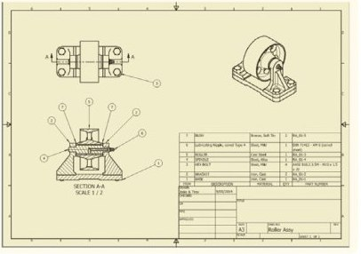
(BASE, attached to, work surface)(BRACKET, attached to, BASE)(SPINDLE, inserted into, BRACKET)(ROLLER, above, SPINDLE)(BUSH, inside, ROLLER)(LUBRICATING NIPPLE, goes through, SPINDLE)(HEX BOLT, screw, BRACKET)
Predicted assembly task planning
(BASE, attached to, work surface)(BRACKET, above, BASE)(SPINDLE, inserted into, BRACKET)(ROLLER, above, SPINDLE)(BUSH, inside, ROLLER)(LUBRICATING NIPPLE, goes through, SPINDLE)(HEX BOLT, screw, components)
(Linear rolling guides, goes through, Slide blocks)(Linear rolling guides, goes through, Slide blocks)(Nut bracket, attached to, Slide blocks)(Screw-nut joints, screwed, Nut bracket)(Screw shaft, attached to, Screw-nut joints)(Upper-end bearing joints, attached to, Screw shaft)(Servo motor, attached to, Upper-end bearing joints)(Screw shaft, goes through, Lower-end bearing joints)(Spindle system, attached to, Slide blocks)(Spindle unit, goes through, Spindle system)
Predicted assembly task planning
(Linear rolling guides, goes through, Slide blocks)(Linear rolling guides, goes through, Slide blocks)(Nut bracket, attached to, Slide blocks)(Screw-nut joints, goes through, Nut bracket)(Screw shaft, attached to, Nut bracket)(Screw shaft, goes through, Lower-end bearing joints)(Upper-end bearing joints, attached to, Screw shaft)(Servo motor, above, Upper-end bearing joints)(Spindle system, attached to, Slide blocks)(Spindle unit, goes through, Nut bracket)
- green綠
- The text (p.6) says green marks a subject–object mix-up. In the figure every sits on a line identical to the answer (P53).正文（p.6）說表示、弄反。圖上每個綠勾所在的那一行都和答案一模一樣（P53）。
- purple紫
- The text says purple marks a relation that describes the same operation in other words and still counts as wrong.正文說表示換了說法、描述同一個動作，但仍算錯。
- cyan青
- Not named in the text.正文沒有說明。
- grey灰
- The text says grey marks a reversed sequence; here it is one moved two lines up (P55).正文說表示順序倒過來；這裡其實是一條 往上移了兩行（P55）。
Watch: each tick colour next to the answer line it is compared with. Left product: 7 answers. Right product: 10 answers.看：每個勾的顏色，和它對的那一條答案。左件 7 條答案，右件 10 條。
- Green, 10 ticks: the predicted string is identical to an answer line. The text says green marks a subject–object swap; no green line in the figure is one. 10 個：預測的字串和某一條答案完全相同。正文說綠勾是弄混，圖上的綠勾沒有一條是這種情形。
- Purple, 3 ticks: the two parts are right, the word differs. Example: (BRACKET, above, BASE) against the answer “attached to”. 3 個：兩個零件對，用詞不同。例：(BRACKET, above, BASE)，答案是 attached to。
- Cyan, 3 ticks: the object was replaced. Example: (HEX BOLT, screw, components) against BRACKET. The text never names this colour. 3 個：換成別的。例：(HEX BOLT, screw, components)，答案是 BRACKET。正文沒有說這個顏色代表什麼。
- Grey, 1 tick: (Screw shaft, goes through, Lower-end bearing joints) is answer line 8 written at line 6. 1 個：(Screw shaft, goes through, Lower-end bearing joints) 是答案第 8 條，卻寫在第 6 條的位置。
- Right product by my two readings: , 6 of 10 lines are in the answer, 6/10 = 0.6; order kept, only lines 1, 2, 3, 9 sit in the same position, 4/10 = 0.4. Left product: 5/7 either way.右件用我的兩種讀法算：，10 條裡有 6 條答案裡找得到，6/10 = 0.6；看順序，只有第 1、2、3、9 條位置也對，4/10 = 0.4。左件兩種都是 5/7。 Derived
A with a similar meaning still counts as wrong意思相近的照樣算錯
The paper says such relations are marked incorrect when they differ from the (p.6 left, ). is the level that ignores the : for the score goes from 30.25 to 58.03, a difference of 27.78 points. Read this way, those points are lost on the while the two parts are right.論文說，和不同就判錯（p.6 左，）。 這一級不看： 從 30.25 升到 58.03，差 27.78 個百分點。照這個讀法，這些分數是兩個零件都對、只輸在關係詞。 Derived
Output of this step → input of KP 07: a plan that scored well is still only words; next the camera has to find each named part in 3D.這一步的輸出 → KP 07 的輸入：分數再高的計劃也還是文字；接下來要靠相機在 3D 裡找到計劃點到名的每個零件。
From one pixel to a point in world coordinates從一個像素到世界座標裡的一個點
The camera gives a colour image and a depth image. Three equations turn the of one part into a set of 3D points in one shared frame.相機給一張彩色影像和一張深度影像。三條式子把一個零件的變成同一個座標裡的一群 3D 點。
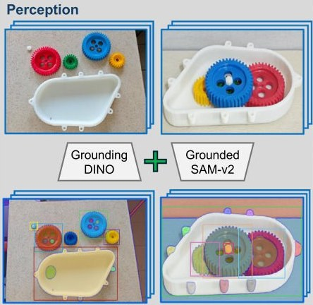
An camera gives two images of the same size: colour, and a that stores one distance per . The paper mounts it on the , the last link of the arm that carries the , and writes one observation as = [Itrgb, Itdepth] (p.4 left). 相機一次給兩張一樣大的影像：彩色，以及 ，每個存一個距離。論文把它裝在 （手臂最末端、裝的那一節），一次觀測寫成 = [Itrgb, Itdepth]（p.4 左）。
Shapes from the paper: Irgb is h×w×3, Idepth is h×w. The unit of depth and the values of h and w are not stated. In the lab: 640×480, depth in metres along the .論文寫的形狀：Irgb 是 h×w×3，Idepth 是 h×w。深度的單位、h 和 w 的值，論文沒寫。實驗室是 640×480，深度沿量，單位公尺。 Demo
Watch: the viewing pyramid in 3D, and three panels of 640×480. RGB has three numbers per , depth has one (m), ID has one integer that says which part the pixel belongs to.看：3D 裡的，以及三格 640×480 的畫面。RGB 每個三個數，深度一個數（m），ID 一個整數，表示這個像素屬於哪個零件。
Two ready-made models find the parts (p.4 left to right). [6] does : from a it outputs a label and a , written . [16] turns each box into a , the set of on part i. Index i runs from 1 to η, the number of parts.找零件靠兩個現成的模型（p.4 左到右）。 [6] 做 ：給一句，輸出和 ，記作 。 [16] 把每個框變成 ，也就是零件 i 身上那些。i 從 1 到 η，η 是零件數。
Shapes: a box is four numbers in , [x1, y1, x2, y2]; a is an h×w image of 0 and 1. In the lab the ID panel stands in for both models.形狀：一個框是四個座標 [x1, y1, x2, y2]；一張 是 h×w 的 0／1 影像。實驗室用 ID 那一格代替這兩個模型。 Demo
K is the : it describes the lens and sensor, not where the camera is. fx, fy are the and cx, cy the , all four in . Lab values: 385, 385, 320, 240 px.K 是 ：描述鏡頭與感光元件，和相機擺在哪無關。fx、fy 是，cx、cy 是，四個數的單位都是。實驗室的值是 385、385、320、240 px。 Demo
- Purpose用途
- Lift one to a 3D point in the camera's own frame. This is called .把一個抬成相機自己座標裡的一個 3D 點，叫做 （）。
- Input輸入
- (u, v), its depth dt(u, v), the K. (u, v)、它的深度 dt(u, v)、 K。
- Output輸出
- Pt(u, v), three numbers.Pt(u, v)，三個數。
- Computed by誰算的
- Geometry. No model.幾何，沒有模型。
- Goes to交給
- Eq. (5)
| Symbol符號 | What it is是什麼 | Shape / unit形狀／單位 | Kind種類 | Now目前值 |
|---|---|---|---|---|
| column and row的行與列 | 2 × px | data | , | |
| The with a 1 added: [u, v, 1]ᵀ. The paper does not write it out後面補一個 1：[u, v, 1]ᵀ。論文沒有寫出來 | 3×1 | computed | from (u, v)由 (u, v) 得 | |
| Depth at that 該的深度 | ; unit not stated; lab: m；單位論文沒寫；實驗室 m | data | ||
| , from ，來自相機 | 3×3; entries in px; values not stated3×3；元素單位 px；數值論文沒寫 | setting | ||
| Point in the camera frame: x right, y down, z forward裡的點：x 向右、y 向下、z 向前 | 3×1; m | computed | ||
| Which camera frame. Not the assembly step t of Gt in KP 05第幾張相機畫面。不是 KP 05 裡 Gt 的組裝步 t | index編號 | data |
- Fixed example: fx = fy = 100 px, (50, 40) px, (70, 60), depth 2 m. Write the pixel with a 1 added. These are : one extra number so that a can act on it.固定的例子：fx = fy = 100 px， (50, 40) px， (70, 60)，深度 2 m。先把像素補一個 1。這叫 ：多帶一個數，才乘得上去。
- Multiply by K⁻¹: subtract the centre, divide by the . The result is the direction of the ray through that , with no unit.乘 K⁻¹：減掉中心、除以。得到的是穿過這個的射線方向，沒有單位。
- Multiply by the depth. The ray becomes one point, in metres.乘上深度。射線上定出一個點，單位公尺。
- The same three steps with the now picked in the lab:同樣三步，換成實驗室目前選的： (u, v) = (, ), d = → Pt =
Watch: the ray from the camera through the , the 3D point on the part, and u, v, d, Pt in the table of Eq. (4).看：從相機穿過那個的射線、落在零件上的 3D 點，以及式 (4) 符號表裡的 u、v、d、Pt。
- Purpose用途
- Move the point from the camera frame to one frame shared by all views.把點從搬到所有共用的一個座標。
- Input輸入
- The point of Eq. (4) and the Γt.式 (4) 的點，以及相機 Γt。
- Output輸出
- Ptw(u, v), the same point in the .Ptw(u, v)，同一個點在的位置。
- Computed by誰算的
- Geometry. No model.幾何，沒有模型。
- Goes to交給
- Eq. (6)
| Symbol符號 | What it is是什麼 | Shape / unit形狀／單位 | Kind種類 | Now目前值 |
|---|---|---|---|---|
| : where the camera is and how it is turned. A 3×3 rotation and a 3×1 packed in one . Where it comes from: not stated; lab: from the arm's ：相機在哪、朝哪。一個 3×3 旋轉加一個 3×1 ，裝成一個。怎麼得到：論文沒寫；實驗室由手臂算出 | 4×4; rotation no unit, m4×4；旋轉無單位， m | data | ||
| Bold P. The paper calls it a ; to multiply it must be the point of Eq. (4) with a 1 added粗體 P。論文叫它 ；要乘得起來，它得是式 (4) 的點補一個 1 | 4×1 (my reading)4×1（我的讀法） | computed | from Pt由 Pt 得 | |
| The point in the . Which frame w is: not stated; lab: the room, y up裡的點。w 是哪個座標：論文沒寫；實驗室用房間座標，y 向上 | 3×1; m | computed |
- Take the point from Eq. (4) and add a 1.拿式 (4) 的點，補一個 1。
- Example : the camera is not rotated and sits 1 m along x.例子的：相機沒有轉，沿 x 1 m。
- Multiply row by row. Only x changes: 0.4 + 1 = 1.4.一列一列乘。只有 x 變了：0.4 + 1 = 1.4。 Derived
- Drop the last 1. The point is (1.4, 0.4, 2) m in the . In the lab now:去掉最後的 1。這個點在是 (1.4, 0.4, 2) m。實驗室目前的值：
More, if asked (2)被問再講（2 條）
- Purpose用途
- Collect the points of one part from k views into one , a list of 3D points with no surface between them.把 k 個裡同一個零件的點收成一團 ，也就是一串 3D 點，點和點之間沒有面。
- Input輸入
- The points of Eq. (5) from every view, and the mi.每個的式 (5) 的點，以及 mi。
- Output輸出
- 𝒫i, the cloud of part i.𝒫i，零件 i 的。
- Computed by誰算的
- The and give mi; the rest is geometry.偵測與分割模型給 mi，其餘是幾何。
- Goes to交給
- The memory of KP 08.KP 08 的記憶。
| Symbol符號 | What it is是什麼 | Shape / unit形狀／單位 | Kind種類 | Now目前值 |
|---|---|---|---|---|
| of part i. Script P, not the P of Eq. (4)零件 i 的。花體 P，不是式 (4) 的 P | ni×3; mni×3；m | computed | pts | |
| Number of . Value not stated相機數。數值論文沒寫 | count個數 | setting | ||
| Which view, 1 to k. Eq. (4)(5) use t in the same place第幾個，1 到 k。式 (4)(5) 同一個位置寫的是 t | index編號 | data | ||
| Colour of (u, v) in view j j 裡 (u, v) 的顏色 | 3 numbers3 個數 | data | RGB panelRGB 那一格 | |
| of part i: the that lie on the part零件 i 的 ：落在零件上的那些 | h×w of 0/1h×w 的 0／1 | model | ID panelID 那一格 |
- In view j, keep only the inside the of part i.在 j，只留下落在零件 i 的 裡的。
- Send each kept through Eq. (4) and Eq. (5). Each one becomes a point in the .留下的每個走一次式 (4) 和式 (5)，各變成裡的一個點。
- Do this for all k views and put the points together. ⋃ means “merge the sets”.k 個都做，把點合在一起。⋃ 的意思是把併起來。
- The lab then thins the merged cloud on a grid; the paper does not say whether it does. Red now:實驗室合併後再用格子把；論文沒有寫有沒有這一步。紅目前： pts, centre中心
Watch: the view counter go from 1 to k and the point count grow. With k = 1 only the surfaces that face the camera get points. With the cloud gets thicker: the lab adds Gaussian noise of σ = setting × (d / 0.5 m)², so 3 mm at 0.5 m and 12 mm at 1 m.看：從 1 數到 k，點數跟著增加。k = 1 時只有朝向相機的那幾面有點。開後變厚：實驗室加的是高斯雜訊，σ = 設定值 × (d / 0.5 m)²，所以 0.5 m 處是 3 mm，1 m 處是 12 mm。 Demo
Real objects Local run: scene 1 on my desk, eight silver tools, six nuts and a steel ruler. tiny gives the boxes and small gives the , public , box 0.35, run on 2026-11-12. The were written before the run.實物 Local run：我桌上的場景 1，八件銀色工具、六顆、一把鋼尺。 tiny 出框， small 出 ，公開，box 0.35，2026-11-12 執行。在執行前就寫好。
Watch ci and mi on a real photo. Nuts: 6 expected, 6 boxes, all on nuts, scores 0.356–0.387, just above 0.35. “nail clipper”: 1 expected, 6 boxes, the top one on a spring clip. “stapler”: 0 boxes at 0.35, 1 box at 0.25 with score 0.276. Right or wrong was judged by eye after the run.在真的照片上看 ci 與 mi。：預期 6，框出 6 個，都在螺帽上，分數 0.356–0.387，只比 0.35 高一點。「nail clipper」：預期 1，框出 6 個，分數最高的落在彈簧夾上。「stapler」： 0.35 時 0 個框，降到 0.25 才有 1 個，分數 0.276。對或錯是跑完後用眼睛看圖判的。
My phone records colour only. There is no and no K, so Eq. (4) cannot be computed on this photo. The 3D half of this step is shown in the lab, on images.手機只有彩色，沒有 ，也沒有過的 K，所以式 (4) 沒辦法在這張照片上算。這一步的 3D 部分改在實驗室、用出來的影像示範。
The 3D point cannot be multiplied by Γt as it is3D 點不能直接拿去乘 Γt
The sizes do not fit: 4×4 times 3×1 is not defined. Moving a point needs a rotation and a shift, R·P + T, and a 3×3 alone cannot shift. With a 1 added to the point, one does both.大小對不上：4×4 乘 3×1 沒有定義。搬一個點要轉、還要，也就是 R·P + T，只有 3×3 的做不出平移。點補一個 1 之後，一個 就能兩件事一起做。 External
Output of this step → input of KP 08: for each part, one taken apart and one point cloud assembled.這一步的輸出 → KP 08 的輸入：每個零件有兩團，一團是拆開時的，一團是裝好時的。
The gap between a loose part and its seat, and what ICP minimises拆開與裝好之間的差距，以及 ICP 最小化的量
Each part now has two : where it lies on the table and where it sits in the product. This step finds the turn and the shift that carry one onto the other.每個零件現在有兩團：躺在桌上的，和裝在產品裡的。這一步要找出一個旋轉和一個，把桌上那一團搬到產品裡那一團上面。
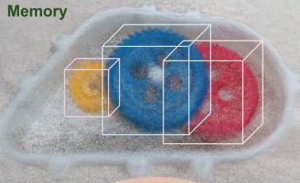
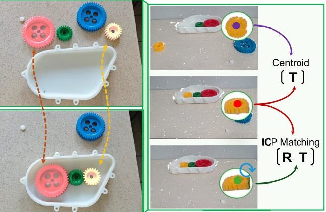
A moves an object without bending it: one rotation R and one T. The paper stores this pair for each part as its memory, = {R, T}, with R a 3×3 in and T a column of three numbers (p.4 right). 是不讓物體變形的搬動：一個旋轉 R 加一個 T。論文替每個零件存下這一組當作記憶， = {R, T}；R 是 裡的 3×3 ，T 是三個數的（p.4 右）。
The thing being aligned is the = {pi, ci, mi}: the , the label and box, the of part i. There are two of them, ζi,dis taken apart and ζi,s assembled. Here R is a rotation; the R of KP 06 was .要對齊的是 = {pi, ci, mi}：零件 i 的、與框、。有兩份，拆開的 ζi,dis 和組好的 ζi,s。這裡的 R 是旋轉；KP 06 的 R 是 。
This is the only in the whole paper. Nothing is trained and there is no ; and this one objective comes from [17], not from the paper's own pages.整篇論文只有這裡在做。沒有任何東西，也沒有 ；而且這條目標式出自 [17]，不在論文自己的頁面上。
- Purpose用途
- Find the R and T that carry the taken-apart cloud onto the assembled cloud.找出把拆開的搬到組好的點雲上的 R 與 T。
- Input輸入
- Two of the same part, from Eq. (6).同一個零件的兩團，來自式 (6)。
- Output輸出
- First a rough shift Trou, then the refined [R, T].先是 Trou，再是修正後的 [R, T]。
- Computed by誰算的
- Geometry: , then , which repeats “pair up , then solve”. No model.幾何：先算，再做 ，也就是重複「配、再解」。沒有模型。
- Goes to交給
- The memory Pi, used when the part is placed.記憶 Pi，放置零件時用。
| Symbol符號 | What it is是什麼 | Shape / unit形狀／單位 | Kind種類 | Now目前值 |
|---|---|---|---|---|
| One point of the taken-apart cloud. Here i counts points; in ζi it counted parts拆開裡的一個點。這裡的 i 數的是點；ζi 的 i 數的是零件 | 3×1; m | data | pts | |
| The point of the assembled cloud nearest to pi after the current move照目前的搬法，組好裡離 pi 最近的點 | 3×1; m | computed | re-paired every round每一輪重新配 | |
| of each cloud: the mean of its points兩團各自的 ：所有點的平均 | 3×1; m | computed | ||
| : difference of the two ：兩個的差 | 3×1; m | computed | ||
| . In : RᵀR = I and det R = 1. Not 。屬於 ：RᵀR = I 且 det R = 1。不是 | 3×3; no unit3×3；無單位 | computed | ||
| . Capital T; small t was the camera frame index。大寫 T；小寫 t 是相機畫面的編號 | 3×1; m | computed | ||
| Number of points in the taken-apart cloud拆開的點數 | count個數 | data | ||
| Root of the mean squared distance between the pairs; what the sum above becomes after dividing by N and taking the root配對點距離平方的平均再開根號；就是上面的總和除以 N 再開根號 | ; mm；mm | computed |
- Start with two clouds of one part. Small fixed example: five points, and the same five moved by (2, −1.5, 0.4). The numbers have no unit; they are made up for the check.從同一個零件的兩團開始。固定的小例子：五個點，以及同樣五個點 (2, −1.5, 0.4)。這組數字沒有單位，是為了核對編的。
- Take the mean of each cloud, then subtract. To bring the moved copy back, Trou = (−2.0, 1.5, −0.4).兩團各取平均，再相減。要把移過的那一團搬回來，Trou = (−2.0, 1.5, −0.4)。
- Shift by Trou. For a pure shift this is already exact: the leftover error is 9.06×10⁻¹⁷, which is rounding.照 Trou 。純平移的話這樣就完全對上：剩下的誤差是 9.06×10⁻¹⁷，只是捨入。 Local run
- Now also turn the copy by 12°. After the shift the error is 0.1283: a shift cannot undo a turn.現在再把那一團多轉 12°。之後誤差還有 0.1283：平移補不回旋轉。
- , one round: pair every pi with its nearest qi; with the pairs fixed, solve the R and T that make the sum smallest; move the cloud. 的一輪：每個 pi 配上最近的 qi；配對固定後，解出讓總和最小的 R 與 T；把搬過去。
- Repeat until the error stops falling. In my own small (15 rounds, turning about z only) it went from 0.1283 to 1.24×10⁻¹⁶.重複到誤差不再下降。我自己寫的小 （15 輪、只估繞 z 的轉角）從 0.1283 降到 1.24×10⁻¹⁶。 Local run
- A separate run with a library, 0.20.0 [25][26], on the same five points: error after 4.59×10⁻¹⁶, 1.0. Two programs, two numbers; the paper names no library.另一次改用函式庫 0.20.0 [25][26] 跑同樣五個點： 後誤差 4.59×10⁻¹⁶， 1.0。兩支程式、兩個數字；論文沒有說用哪個函式庫。 Local run
Watch: the solid cloud on the table and the faint one in the cover. First the jump by Trou, then the small turns. Read the round counter and the in mm fall; the lab stops at 30 rounds or when it reports “”.看：桌上實心的那一團，和裡半透明的那一團。先是照 Trou 跳過去，再一小步一小步轉。讀輪數和 （mm）往下掉；實驗室最多跑 30 輪，或回報 就停。 Demo
Now: round目前：第 of at most輪，上限 · · :
More, if asked (2)被問再講（2 條）
My view A looks almost the same after a turn of one tooth: 360° / 22 teeth ≈ 16.4° for the medium gears of the lab. So can settle one or more teeth away and still report a small error. The paper does not discuss this.My view 轉過一齒，看起來幾乎一樣：實驗室的中齒輪 22 齒，360° / 22 ≈ 16.4°。所以 可能停在差一齒或幾齒的位置，誤差卻還是很小。論文沒有討論這件事。
Local run On our own outline, not the paper's parts: a test with this site's code on a 20-tooth test outline plus two marks (a separate test gear, not the lab's 22-tooth gear), 40 rounds, run again on 2026-11-12. Start 10° off: turned back, 0.51 mm. Start 15° to 50° off: it stops 13.5° short each time, RMSE 1.96 mm. Start 80° off: RMSE 5.59 mm. Flipped over: RMSE 7.24 mm.Local run 用我們自己合成的輪廓（不是論文的零件）：用這個網站的 程式測 20 齒的測試輪廓加兩個記號（另一個測試用齒輪，不是實驗室的 22 齒齒輪），跑 40 輪，2026-11-12 重跑過。起始差 10°：轉得回來， 0.51 mm。起始差 15° 到 50°：每次都差 13.5° 就停，RMSE 1.96 mm。起始差 80°：RMSE 5.59 mm。翻面：RMSE 7.24 mm。
is still needed after the shift對齊之後仍然需要
A is one point. Its shift has three numbers and carries no rotation. In the example above, a 12° turn leaves an error of 0.1283 after the shift, and brings it to 1.24×10⁻¹⁶. The paper calls the first step rough (p.4 right).只是一個點。它的位移只有三個數，不帶旋轉。上面的例子裡，多轉 12° 之後，完還剩 0.1283 的誤差， 才把它降到 1.24×10⁻¹⁶。論文把第一步叫 rough（p.4 右）。
Output of this step → input of KP 09: the arm knows where each part must end up; it still has to decide where to grip it and how to approach.這一步的輸出 → KP 09 的輸入：手臂知道每個零件最後要到哪裡；接下來要決定夾哪裡、怎麼靠近。
Choosing the grasp, and computing the six waypoints選夾取姿態，以及六個路點的計算方式
The arm must choose a place to hold the part and a path to reach it. This step gives a grip in the robot's own frame, a 7-number action, and six points to pass through.手臂要決定零件夾哪裡、從哪條路靠過去。這一步給出機器人座標裡的夾法、七個數的動作，以及要經過的六個點。
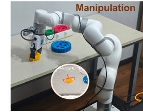
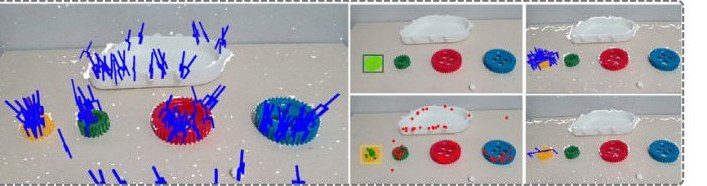
Why a learned grasp model? The paper's reason: mechanical parts often have irregular shapes, and such shapes are hard for a to hold (p.5 left). So it uses the [18][27] to propose for any part.為什麼要用學出來的夾取模型？論文的理由是：機械零件的形狀常常不規則，平行不好夾（p.5 左欄）。所以它用預的 [18]，替任何零件提出不會碰撞的 。 Paper
A says where the is and how it is turned when it closes on a part. The gripper here is a : two flat fingers that move toward each other. The paper gets candidates from [18], a module: given the colour image and the , it outputs , each a , for every object it sees (p.5 left). 是合上零件那一刻的位置與朝向。這裡的夾爪是 ：兩片平指互相靠攏。論文的候選來自 [18]，一個預好的模組。給它彩色影像和 ，它替看得到的每個物體輸出 ，每個是 （p.5 左）。
To keep only the target part, the are projected onto the image, and those that fall inside the target's mi are kept as Γgrasp (p.5 left). Which of the kept poses is finally used is not stated. The lab has no : a geometric rule grips from above at the centre of the part's cloud.為了只留目標零件，這些先投影到影像上，落在目標的 mi 裡的留下來，叫 Γgrasp（p.5 左）。留下來的候選最後挑哪一個，論文沒寫。實驗室沒有 ：用幾何規則，從正上方夾零件的中心。 Demo
| Symbol符號 | What it is是什麼 | Shape / unit形狀／單位 | Kind種類 | Now目前值 |
|---|---|---|---|---|
| of the target part, seen from the camera目標零件的，從相機看 | 4×4; unit not stated; lab: m4×4；單位論文沒寫；實驗室 m | model | in the line under the formula見式子下方那一行 | |
| Camera to , from : a one-time measurement of where the camera is fixed相機到機器人，來自 ：事先量一次相機固定在哪裡 | 4×4 | setting | error setting誤差設定 | |
| Here: product of two 4×4 matrices. The same sign appears again in Eq. (7) with another job這裡是兩個 相乘。同一個記號在式 (7) 又出現，做的是別的事 | — | computed | — | |
| The same in the robot's frame. The paper calls it 同一個，換到機器人的座標。論文稱 | 4×4 | computed | in the line under the formula見式子下方那一行 |
Watch: the blue outlines on the part, as in the bottom row of Fig. 7, and the one that is chosen. Under the formula, read the two and their product.看：零件上的藍色線框（和圖 7 最下列一樣），以及選中的那一個。式子下方讀兩個和它們的乘積。 Demo
| Symbol符號 | What it is是什麼 | Shape / unit形狀／單位 | Kind種類 | Now目前值 |
|---|---|---|---|---|
| One action: 3 + 3 + 1 = 7 numbers一個低層動作：3 + 3 + 1 = 7 個數 | 7×1 | computed | ||
| Numbers 1–3: how far the moves along x, y, z. Taken from Γobj. Not the T of 第 1–3 個數：沿 x、y、z 各移多少。取自 Γobj。不是 的 T | 3; unit not stated; lab: m3；單位論文沒寫；實驗室 m | computed | ||
| Numbers 4–6: the 's turn as , three angles about three axes. Not the 3×3 R of KP 08, not 第 4–6 個數：的轉向，寫成 ，繞三個軸的三個角。不是 KP 08 的 3×3 R，也不是 | 3; axis order and unit not stated; lab: , shown in °3；軸的順序與單位論文沒寫；實驗室 ，顯示成 ° | computed | ||
| Number 7: open or closed第 7 個數：開或合 | binary; lab also shows the opening二值；實驗室另外顯示開口 | computed |
- Purpose用途
- Lay out the last stretch before a pick or a place as six , points the passes in order.把拾取或放置前的最後一段路排成六個 （），依序經過。
- Input輸入
- Start position P, turn R and move T from the action above, three fixed numbers.起點 P、上面動作裡的轉向 R 與位移 T、三個固定的數。
- Output輸出
- Six positions. The closing of the gripper is not in the list; the text puts it after the sixth.六個位置。夾爪閉合不在這串裡；正文說到第六個之後才合上。
- Computed by誰算的
- Arithmetic. No model.算術，沒有模型。
- Goes to交給
- The generator, then the joints.產生，再到各。
| Symbol符號 | What it is是什麼 | Shape / unit形狀／單位 | Kind種類 | Now目前值 |
|---|---|---|---|---|
| position near the target, where the approach starts. Exactly which point: not stated. Lab: the position of the , the reference point at the tip of the gripper that the arm is told to move目標附近的位置，進場的起點。確切是哪一點：論文沒寫。實驗室用 的位置，也就是夾爪前端的參考點，手臂接到的移動命令指的就是它 | 3; lab: m3；實驗室 m | data | ||
| The move from P to the grip point從 P 到夾取點的位移 | 3; lab: m3；實驗室 m | computed | ||
| Fractions of T. No source or test is given for themT 的比例。這三個數沒有來源，也沒有測試 | no unit無單位 | setting | ||
| An ordered list: first to sixth 有順序的一串：第一到第六個 | 6 items6 項 | computed | now at no.目前走到第 |
- Fixed example: P = (0.10, −0.20, 0.30) m and T = (0, 0.05, −0.12) m. The length of T is √(0.05² + 0.12²) = 0.13 m. 1 is P itself.固定的例子：P = (0.10, −0.20, 0.30) m，T = (0, 0.05, −0.12) m。T 的長度是 √(0.05² + 0.12²) = 0.13 m。第 1 個就是 P。
- 2 is printed as P × R. The text says: turn the to the grasp direction and do not move. So the position stays (0.10, −0.20, 0.30).第 2 個印成 P × R。正文說的是：把轉到夾取方向，位置不動。所以位置還是 (0.10, −0.20, 0.30)。
- 3: go 80% of the way.第 3 個：走八成。
- 4, 5, 6: 92%, 96%, 100%.第 4、5、6 個：92%、96%、100%。 Derived
- Length of each move: the fractions are 0.8, then 0.92 − 0.8 = 0.12, then 0.04, then 0.04. Times 0.13 m: 104 mm, 15.6 mm, 5.2 mm, 5.2 mm. The last two are equal.每一段走多長：比例是 0.8，再來 0.92 − 0.8 = 0.12，再來 0.04、0.04。乘上 0.13 m：104 mm、15.6 mm、5.2 mm、5.2 mm。最後兩段一樣長。 Derived
- The six points in the lab now:實驗室目前的六個點： · · · · ·
More, if asked (2)被問再講（2 條）
Watch: six numbered balls on a straight line and the counter 1 to 6. The lab's T is 100 mm long, so the moves are 80, 12, 4, 4 mm. With 0.5 they become 50, 42, 4, 4 mm: the second move is no longer a small one.看：一條直線上六顆有編號的球，計數從 1 到 6。實驗室的 T 長 100 mm，四段是 80、12、4、4 mm。改成 0.5 之後變成 50、42、4、4 mm：第二段就不算小步了。 Demo
Approaching the grip point in stages, not in one move分段接近夾取點，而不是一步到位
The paper's order is: turn first without moving, then go straight in with smaller motions, then close (p.5 left). The is already lined up before it gets close, and the last moves are short. Why 0.8, 0.92 and 0.96, and not other values, is not stated.論文的順序是：先原地轉向，再直線靠近、步子變小，最後才合上（p.5 左）。這樣靠近之前就已經對準，最後幾步也短。至於為什麼是 0.8、0.92、0.96 而不是別的數，論文沒寫。
Output of this step → input of KP 10: a grip and six for each pick and each place; next the arm runs all five steps.這一步的輸出 → KP 10 的輸入：每次拾取、每次放置各有一個夾法和六個；接下來手臂把五步跑完。
The five real steps, what 7/10 measures, and a recap真機五步、表 3 的 7/10 實際量的內容，以及回顧
The paper ends with a real arm and a five-step . This step reads its one table, runs the same five in the lab, and then looks back over the whole talk.論文最後用真的手臂組一個五步的。這一步讀那唯一的一張表，在實驗室跑同樣的五條 ，然後回頭看整份報告。
The setup (§4.2, p.7 left): a partial on a desk, five steps that put a red, a green, a yellow and a blue and a white nut onto a . Three pieces of hardware are named: a arm, an [28] under it, and a camera.實驗配置（§4.2，p.7 左）：桌上一個部分，五步把紅、綠、黃、藍四個和一顆白色裝到白色上。點名的硬體有三樣： 手臂、它底下的 [28] （移動底盤）、 相機。
Fig. 7Five steps on the real robot真機上的五步
- red large Attached to
- green medium Attached to
- yellow medium Attached to
- blue large Attached togreen medium gear
- white tiny Attached toblue large
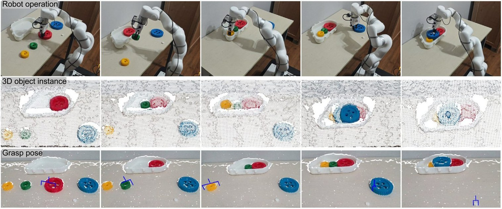
Fig. 3 / Fig. 7The plan as each figure prints it兩張圖各自印的計劃
| Fig. 3 (p.4) | Fig. 7 (p.7) | |
|---|---|---|
| First step第一步 | <Yellow gear, Attached to, Box> | <red large gear, Attached to, white cover> |
| Last step最後一步 | <White nut, Attached to, Blue gear> | <white tiny hexagonal nut, Attached to, blue large gear> |
| Name of the base底板的名稱 | Box |
Watch the top row of Fig. 7. Steps 1–3: red, green, yellow , each “attached to” the . Step 4: blue large gear attached to the green medium gear. Step 5: white tiny attached to the blue large gear. The text splits one such into two robot actions: pick the first part, then place it on the second (p.7 right).看圖 7 最上面那一列。第 1–3 步：紅、綠、黃各自 attached to 白色。第 4 步：藍色大齒輪 attached to 綠色中齒輪。第 5 步：白色小 attached to 藍色大齒輪。正文把這樣一條 拆成兩個手臂動作：先拾取前一個零件，再放到後一個上面（p.7 右）。
| Step步 | Successes成功次數 | |
|---|---|---|
| 1 | red large | 7 |
| 2 | green medium | 9 |
| 3 | yellow medium | 8 |
| 4 | blue large | 7 |
| 5 | white tiny | 7 |
Watch: five and five counts out of 10 (p.7 right). The caption calls them results of the memory. The text counts a as a success when it gives an accurate 3D object instance and precise movement and rotation values. So this is a count for memory and perception, not for assembly.看：五句，五個「10 次中幾次」（p.7 右）。圖說寫的是 memory 的結果。正文對成功的定義是：產生準確的 3D object instance，並給出精確的移動與旋轉值。所以這張表數的是記憶與感知的成功次數，不是組裝。
More, if asked (2)被問再講（2 條）
How much can ten say? A is the range of true that still fit the count we saw.十次能說多少？ 是和看到的次數還說得通的真實範圍。
| Symbol符號 | What it is是什麼 | Shape / unit形狀／單位 | Kind種類 | Now目前值 |
|---|---|---|---|---|
| per step每一步試幾次 | count次數 | setting | 10 | |
| Successes in those . Not the k of Eq. (6)其中成功幾次。不是式 (6) 的 k 個 | count次數 | data | 7, 9, 8, 7, 7 | |
| Chance we accept of being wrong; 0.05 gives a 95% interval願意接受的出錯機率；0.05 對應 95% | 0.05 | setting | 0.05 | |
| Lowest and highest true that still fit k of n還說得通「n 次中 k 次」的最低與最高真實 | 0–1 | computed | in the line under the formula見式子下方那一行 |
- Step 1 of Table 3: k = 7, n = 10. The plain rate is k/n = 0.70.表 3 的第 1 步：k = 7，n = 10。直接除是 k/n = 0.70。
- Lower end: find the rate at which 7 or more successes would happen only 2.5% of the time. Try p = 0.3475: the chances of 7, 8, 9, 10 successes are 0.0204 + 0.0041 + 0.0005 + 0.0000 = 0.0250. So pL ≈ 34.8%.下限：找一個，讓「7 次以上成功」只有 2.5% 的機會發生。代 p = 0.3475：成功 7、8、9、10 次的機率是 0.0204 + 0.0041 + 0.0005 + 0.0000 = 0.0250。所以 pL ≈ 34.8%。
- Upper end: find the rate at which 7 or fewer successes would happen only 2.5% of the time. Try p = 0.9333: the chances of 8, 9, 10 are 0.1152 + 0.3584 + 0.5014 = 0.9750, which leaves 0.0250. So pU ≈ 93.3%.上限：找一個，讓「7 次以下成功」只有 2.5% 的機會發生。代 p = 0.9333：成功 8、9、10 次的機率是 0.1152 + 0.3584 + 0.5014 = 0.9750，剩下 0.0250。所以 pU ≈ 93.3%。
- The same for the other counts: 8 of 10 gives 44.4% to 97.5%; 9 of 10 gives 55.5% to 99.7%.其他次數照做：10 次中 8 次是 44.4% 到 97.5%；10 次中 9 次是 55.5% 到 99.7%。
- All three intervals share the range 55.5% to 93.3%. Ten cannot tell the best step from the worst.三個都包含 55.5% 到 93.3% 這一段。只試十次，分不出最好和最差的那一步。
Demo The lab is a teaching simulation. The computing is real: , , , Eq. (7), physics. The data are : images, a of our own design, that we set. Object IDs stand in for the , a geometric rule for . Its numbers are not results of the paper and not a rerun of Table 3.Demo 實驗室是教學模擬。計算是實算：、、、式 (7)、物理。資料是合成的：的影像、我們自己設計的、自己設定的。偵測用物件 ID 代替， 用幾何規則代替。它的數字不是論文的結果，也不是表 3 的重跑。
Watch after each release: horizontal distance to the seat, height error, tilt. A step passes when all three are under 2 mm, 2 mm and 3°. With at zero the lab's own test expects five passes. When you turn the red (34 teeth), the green one (22 teeth) turns 34/22 ≈ 1.55 times as fast.看每次鬆開之後的三個讀數：離座位的水平距離、高度差、傾角。三個都小於 2 mm、2 mm、3° 才算過。為零時，實驗室自己的測試預期五步都過。試轉時驅動紅（34 齒），綠齒輪（22 齒）轉速是它的 34/22 ≈ 1.55 倍。
Step第 / · · position位置 · height高度 · tilt傾角 · passed通過 , failed失敗
Demo: let a write the plan for our lab演示：讓 替我們的實驗室寫計劃
Local run I gave the chain of Fig. 5 one picture of this lab (left: the assembled ; right: the loose parts) and the six-item . 27 chains finished on 2026-11-12: (gpt-4o-2024-08-06) 3 with and 3 without the , 3 more with the part list left out, 1, and on this PC 17 at 0, 0.7 and 1.2. Each plan below is the model's own reply. Nothing is corrected.Local run 我把圖 5 的流程餵給這個實驗室的一張圖（左：裝好的；右：桌上的散件），加上六項的。2026-11-12 跑完 27 條流程：（gpt-4o-2024-08-06）有 的 3 條、沒有的 3 條，另有 3 條拿掉零件清單， 1 條，這台電腦上的 17 條， 分別是 0、0.7、1.2。下面每一份計劃都是模型自己的 回覆，沒有修改。
This is our picture and our , not one of the paper's 127 drawings. It says nothing about Table 1.這是我們的圖和我們的，不是論文那 127 張圖。它不能拿來說表 1。
| Model, setting模型與設定 | per run每次的 條數 | Parts seated out of 5, per run (subject name enough)五件裡裝到位的件數，逐次（對得到就算） | Same, strict: the object must also be a part同上，嚴格：也必須是零件 |
|---|---|---|---|
| , Searcher有 | 14, 9, 15 | 0, 5, 5 | 0, 0, 0 |
| , without沒有 | 6, 8, 12 | 3, 5, 5 | 0, 0, 0 |
| , with, no 有，不給 | 13, 33, 7 | 0, 3, 4 | 0, 0, 0 |
| , with有 | 6 | 0 | 0 |
| , T = 0, with有 | 6, 6, 6 | 0, 5, 5 | 0, 0, 0 |
| , T = 0, without沒有 | 6, 6, 6 | 0, 0, 0 | 0, 0, 0 |
| , T = 0.7, with有 | 6, 6, 6 | 0, 0, 0 | 0, 0, 0 |
| , T = 0.7, without沒有 | 5, 6, 5 | 5, 0, 0 | 0, 0, 0 |
| , T = 1.2, with有 | 5, 6, 5 | 0, 0, 0 | 0, 0, 0 |
| , T = 1.2, without沒有 | 5, 6 | 5, 0 | 0, 0 |
Demo The last two columns come from running each plan in the lab's physics with no (data/lab/plans.json). Three things show up. First, the models name things that are not on the : keeps writing “leftmost peg” or “central peg” as the object. Second, mostly writes relations outside the ten words of Fig. 5 (“positioned onto”, “secured onto”), so those steps are skipped; 13 of its 17 plans seat nothing. Third, when a plan puts the blue before the green one, the arm does what it is told and the gear cannot go down the shaft.Demo 後兩欄是把每一份計劃放進實驗室的物理裡、不加跑出來的（data/lab/plans.json）。看得到三件事。第一，模型會寫出裡沒有的東西： 常把寫成「leftmost peg」「central peg」。第二， 多半用圖 5 那十個詞以外的關係（「positioned onto」「secured onto」），那些步驟不會被執行；17 份計劃裡有 13 份一件都沒裝上。第三，計劃把藍排在綠齒輪前面時，手臂照做，齒輪就套不下去。
With the left out, added parts that are not in the picture: “washer”, “screws”, “base plate”. One of the three runs wrote 33 . This is one picture and three runs. It shows what the list does in this demo and nothing more.把拿掉之後， 多寫出圖上沒有的零件：「washer」「screws」「base plate」。三次裡有一次寫了 33 條 。這只是一張圖、三次執行，說明的是清單在這個演示裡的作用，不能再往外推。 Local run
Read the third column with care. Under the default rule the lab takes the place for a step from the subject part's own in memory and ignores the object, so a seated part only shows that the subject name matched a part, not that the plan was right. at T = 0 with the , run 2, named no listed part as an object (6 of 6 unknown) and still seated 5. Under the strict rule every one of the 27 plans seats 0.第三欄要小心讀。預設規則下，實驗室每一步的放置位置取自零件在記憶裡的，不看，所以裝上一件只代表主詞名稱對得到某個零件，不代表計劃是對的。 在 T = 0、有 的第 2 次，受詞沒有一個是清單上的零件（6 條都不認得），照樣裝上 5 件。換成嚴格規則，27 份計劃全部是 0 件。 Demo
With so few runs I cannot say the helps or hurts here: 0, 5, 5 against 3, 5, 5 is three runs each.次數這麼少，這裡說不出 是幫忙還是幫倒忙：0、5、5 對 3、5、5，各只有三次。
Load a plan, press Reset, then Run. Watch the Plan table: which rows say “unknown object” or “unknown relation”, and the reason on each failed step. run 2 seats all five parts. Run 1 seats none: it reaches for the blue before the green one is in. The plan moves nothing.載入一份計劃，按 Reset，再按 Run。看 Plan 表：哪幾列寫「unknown object」或「unknown relation」，以及每個失敗步驟的原因。 第 2 次把五件都裝到位。第 1 次一件都沒裝好：綠還沒裝，它就去拿藍齒輪。 的計劃什麼都沒動。
The paper says detected labels are “synchronized with N” (p.4, right column, top) and stops there; what happens when a name in a matches nothing is not stated (P13, raised in KP 02). The does not need the object to compute where to place a part: the comes from that part's own memory [R, T]. So the lab's default is “subject is enough”. Switch to the strict rule and the same plans seat nothing.論文說偵測到的和 N「同步」（p.4 右欄頂端）就沒有下文； 裡的名字對不到任何東西時怎麼辦，沒有寫（P13，KP 02 講過）。低層算放置位置時用不到：來自這個零件自己的記憶 [R, T]。所以實驗室預設「對得到就好」。切到嚴格規則，同樣幾份 計劃一件都裝不上。 My view
Change one number and run again改一個數再跑一次
Γcb is the transform the paper gets from (p.5, left column). An error there shifts every . The opened is 85 mm wide and a large is 72 mm across, so a few millimetres decide whether both pads touch. In 20 headless runs per value: all five parts seated 20 times at 0 and 1 mm, 17 at 2 mm, 12 at 3 mm, 8 at 4 mm, 3 at 5 mm (Sweep tab). The sweep does not render images: it uses oracle perception. Each point is projected with the true camera and back-projected with the wrong hand-eye transform, so this error is applied geometrically; depth , when it is on, comes from an error model fitted to the lab's image pipeline (config.ORACLE, tools/tests/calibrate_oracle.mjs). Eq. (4)–(6) and are not run on images in the sweep.Γcb 是論文用得到的相機到的變換（p.5 左欄）。它有誤差時，每個都跟著偏。張到最開是 85 mm，大直徑 72 mm，所以差幾公釐就決定兩個指墊碰不碰得到。每個值各跑 20 次（無畫面）：誤差 0 和 1 mm 時 20 次都五件到位，2 mm 是 17 次，3 mm 是 12 次，4 mm 是 8 次，5 mm 是 3 次（Sweep 分頁）。批次不畫影像，用的是 oracle 感知：每個點用真的相機投影、再用帶誤差的手眼變換，所以手眼誤差是照幾何算的；開了深度時，雜訊來自對實驗室影像流程擬合的誤差模型（config.ORACLE，tools/tests/calibrate_oracle.mjs）。批次裡沒有在影像上跑式 (4)–(6) 與 。 Demo
Watch the same three readings against the same limits, and the reason shown for a failed step. The enters at dt in Eq. (4), passes through the cloud and , and ends in the place target. The paper reports one count per step (Table 3); this demo only shows where such noise would enter.看同樣三個讀數對同樣的，以及失敗那一步顯示的原因。從式 (4) 的 dt 進來，經過和 ，最後落在放置目標上。論文每一步報的是一個次數（表 3）；這個演示只是讓大家看到雜訊會從哪裡進來。 Demo
Adding the five cells does not give an assembly of 38/50五格相加的 38/50 不是組裝
The sum is mine: 7 + 9 + 8 + 7 + 7 = 38; the paper prints no total. And each step was counted on its own. A product is built only when all five work in one go. If the five were independent and every memory success led to a seated part, that would be 0.7 × 0.9 × 0.8 × 0.7 × 0.7 ≈ 0.25. Both “ifs” are my assumptions; the paper reports no such number.這個加總是我算的：7 + 9 + 8 + 7 + 7 = 38，論文沒有印總數。而且每一步是分開數的。一件產品要五步在同一次裡都成功才算裝好。假如五步互相獨立、記憶成功就等於零件裝上，那會是 0.7 × 0.9 × 0.8 × 0.7 × 0.7 ≈ 0.25。這兩個「假如」是我的假設；論文沒有報這種數字。 Derived
The paper's two contributions, in its own terms論文自己列的兩項貢獻
- A VLM-based way to learn the and write it as in . Several and are used against the and errors that VLMs show in manufacturing. The paper says the method applies across formats, viewing angles and product types of drawings.用 學出，寫成 裡的 。用多個 VLM 加上 ，處理 VLM 在製造領域會出現的 與錯誤。論文說這個方法適用於不同格式、視角與產品種類的。
- Robot assembly built on the of the 3D : perception, semantic information and 3D , for geometry-aware manipulation that carries out the plan. The paper says this answers the irregular shapes of mechanical parts.以 3D 的 為基礎的機器人組裝： perception、語意資訊與 3D ，支援 geometry-aware manipulation，把計劃做出來。論文說這是針對機械零件形狀不規則的問題。
Paper §5, p.8 left column
Recap: the issues raised, by step回顧：每一步講過的問題
| KP | Raised there當場講的 | In one sentence一句話 |
|---|---|---|
| 0 | P01 | “” is not defined; two of the carry six examples.「」沒有定義；有兩份 帶了六個例子。 |
| 1 | P04 | No number covers the whole route from a drawing to a finished product.從到成品，整條路沒有一個數字。 |
| 2 | P10 | The text, Eq. (1)(3) and Fig. 5 disagree on whether a outputs sentences or . 輸出的是句子還是 ，正文、式 (1)(3) 和圖 5 說法不一。 |
| 3 | P15 | In Fig. 2 the arrows of the two end at each other's output.圖 2 兩個 的箭頭接到了對方的輸出。 |
| 4 | P31 | The conditions behind Table 2 are not stated.表 2 背後的條件沒有交代。 |
| 5 | P39 | The in Fig. 2 are not among the ten words of Fig. 5.圖 2 的 不在圖 5 那十個詞裡。 |
| 6 | P49 | R and have one sentence and no formula.R 與 只有一句話，沒有公式。 |
| 7 | P63 | Eq. (5) multiplies a by a 3×1 point.式 (5) 拿 4×4 的乘 3×1 的點。 |
| 8 | P75 | No step is written from the memory [R, T] to the for placing.從記憶的 [R, T] 到放置，中間少寫一步。 |
| 9 | P81 | The × in Eq. (7) is not defined.式 (7) 的 × 沒有定義。 |
| 10 | P86 | Table 3 counts memory and perception, not seated parts.表 3 數的是記憶與感知，不是零件有沒有裝到位。 |
What the paper does well論文做得好的地方
What the method is good for, and when to use it這個方法能做什麼、適合用在哪裡
My view Use it when you have an and a , the parts can be told apart by a short such as colour and size, and you want a plan you can read and correct before the robot moves. It asks for no per product.My view 適合的情況：手上有和，零件用一句短提示（例如顏色加大小）就分得開，而且希望手臂動之前有一份看得懂、改得動的計劃。它不需要替每件產品。
Be careful in three cases. Tight fits: the run is , and the authors list as future work (p.8 left). A product nobody has built yet: the memory needs an assembled example (P71). Parts that look alike: on my desk, “nail clipper” drew 6 boxes on silver tools for 1 real one. That was our on our desk, not a test of the paper's setup.三種情況要小心。配合很緊的零件：現在是，控制是作者自己列的未來工作（p.8 左）。還沒有人裝過的產品：記憶需要一件裝好的實例（P71）。長得很像的零件：我桌上的「nail clipper」在銀色工具上框出 6 個，實際只有 1 個。這是我們桌上、我們跑的偵測，不是對論文配置的測試。 Local run
Limits of this report這份報告自己的限制
The real footage is assembled by a human hand, not a robot. My phone has no depth, so nothing after Eq. (4) was computed on real images. The lab uses and stand-ins for the and for . Tables 1 to 3 were not rerun: we found no public code, model or of this paper (paper, GitHub, Hugging Face, Zenodo and the institutional record, searched 14 November 2026; see KP 00), and the data, offered on request, were not obtained. My runs are one photo and at most 5 runs per setting, and I wrote the myself.實拍是人手組的，不是手臂。手機沒有深度，所以式 (4) 之後的東西都沒有在真的影像上算過。實驗室用的是，偵測和 都是代替品。表 1 到表 3 沒有重跑：找不到這篇公開的程式、模型或（2026-11-14 查過論文、GitHub、Hugging Face、Zenodo 與作者單位的成果頁，見 KP 00），資料寫的是來信索取，沒有取得。我的 實跑只有一張照片、每種設定最多 5 次，也是我自己寫的。
Output of this step → your questions: every formula, table and demo above can be reopened from the list on the left.這一步的輸出 → 交給各位提問：上面每條式子、每張表、每個演示，都可以從左邊的清單再打開。
References
References參考文獻
Elsevier numbered style. Numbers in square brackets in the text point here, in the order they first appear; the paper's own reference numbers are given in each note. Figures from the paper are redrawn or shown in part for comment, © Elsevier. The pages and code were written with an AI coding assistant; the paper's numbers were checked line by line against the PDF (log in docs/research/facts-audit.md of the repository).格式依 Elsevier 編號式。正文方括號裡的數字指到這裡，依第一次出現的順序編號；論文自己的書目編號寫在每一條的註裡。論文的圖重新繪製，或只截取局部供評論，© Elsevier。頁面與程式是和 AI 程式助理一起寫的；論文的數字逐條對照過 PDF，紀錄在儲存庫的 docs/research/facts-audit.md。
- [1]S. Li, Z. Yan, Z. Wang, Y. Gao, VLM-MSGraph: Vision Language Model-enabled Multi-hierarchical Scene Graph for robotic assembly, Robot. Comput.-Integr. Manuf. 94 (2025) 102978. https://doi.org/10.1016/j.rcim.2025.102978.The paper this report is about.本報告講的論文。
- [2]UFACTORY, xArm collaborative robot. https://www.ufactory.cc/xarm-collaborative-robot/ (accessed 13 November 2026).The arm used in §4.2.§4.2 用的手臂。
- [3]UFACTORY, xarm_ros, GitHub repository. https://github.com/xArm-Developer/xarm_ros (accessed 13 November 2026).xArm6 and gripper meshes, joint origins and limits for the 3D lab (BSD 3-Clause). Also used by the ManipuLab prototype.3D 實驗室的 xArm6 與夾爪網格、關節原點與限位（BSD 3-Clause）。ManipuLab 原型也用它。
- [4]OpenAI, A. Hurst, et al., GPT-4o system card, arXiv:2410.21276 (2024). https://arxiv.org/abs/2410.21276.The model we ran on our desk photos and on the rendered lab picture (gpt-4o-2024-08-06, gpt-4o-mini-2024-07-18).我們拿來跑桌上照片與實驗室渲染圖的模型（gpt-4o-2024-08-06、gpt-4o-mini-2024-07-18）。
- [5]Gemma Team, A. Kamath, J. Ferret, et al., Gemma 3 technical report, arXiv:2503.19786 (2025). https://arxiv.org/abs/2503.19786.gemma3:4b, the open model we ran on this computer (KP 10).gemma3:4b，我們在本機跑的開源模型（KP 10）。
- [6]S. Liu, Z. Zeng, T. Ren, F. Li, H. Zhang, J. Yang, et al., Grounding DINO: Marrying DINO with grounded pre-training for open-set object detection, arXiv:2303.05499 (2023). https://arxiv.org/abs/2303.05499.Paper reference [30]: labels and boxes from text prompts. Run on our photos (KP 07).論文書目 [30]：由文字提示得到標籤與框。我們拿它跑過自己的照片（KP 07）。
- [7]N. Ravi, V. Gabeur, Y.-T. Hu, R. Hu, C. Ryali, T. Ma, et al., SAM 2: Segment anything in images and videos, arXiv:2408.00714 (2024). https://arxiv.org/abs/2408.00714.SAM 2.1 small, run with the Grounding DINO boxes on our photos and videos (KP 07).SAM 2.1 small，用 Grounding DINO 的框跑我們的照片與影片（KP 07）。
- [8]IDEA Research, GroundingDINO, GitHub repository. https://github.com/IDEA-Research/GroundingDINO (accessed 13 November 2026).Code for Grounding DINO. Run on this computer on 2026-11-12: the tiny model (IDEA-Research/grounding-dino-tiny) through Hugging Face transformers, on our photos (tools/run_perception.py).Grounding DINO 的程式。2026-11-12 在這台電腦上跑過：tiny 模型（IDEA-Research/grounding-dino-tiny），透過 Hugging Face transformers 跑我們的照片（tools/run_perception.py）。
- [9]IDEA Research, Grounded-SAM-2, GitHub repository. https://github.com/IDEA-Research/Grounded-SAM-2 (accessed 13 November 2026).Code that joins Grounding DINO and SAM 2; the paper's GroundedSAM-v2 is probably this pipeline: the paper cites Grounded SAM [31], which has no v2, so this is our guess. Not run as such: we called the two models directly through transformers instead.把 Grounding DINO 和 SAM 2 接起來的程式；論文的 GroundedSAM-v2 大概就是這條流程：論文引的是 Grounded SAM [31]，那篇沒有 v2，所以這是我們的推測。這份程式本身沒有跑：我們改用 transformers 直接呼叫兩個模型。
- [10]Meta AI, SAM 2, GitHub repository. https://github.com/facebookresearch/sam2 (accessed 13 November 2026).SAM 2.1 weights and code. Run on this computer on 2026-11-12: sam2.1-hiera-small through transformers, on the boxes from Grounding DINO.SAM 2.1 的權重與程式。2026-11-12 在這台電腦上跑過：sam2.1-hiera-small，透過 transformers，吃 Grounding DINO 的框。
- [11]three.js authors, three.js, r186, GitHub repository. https://github.com/mrdoob/three.js (accessed 13 November 2026).3D rendering of the lab, the cover and the models (MIT). Runs in the page.實驗室、封面與模型的 3D 繪圖（MIT），在網頁裡執行。
- [12]Dimforge, Rapier physics engine, rapier3d-compat 0.21.0, GitHub repository. https://github.com/dimforge/rapier.js (accessed 13 November 2026).Rigid-body physics of the lab (Apache-2.0). Runs in the page.實驗室的剛體物理（Apache-2.0），在網頁裡執行。
- [13]Poly Haven, Small Empty Room 3 (HDRI); Laminate Floor 02, Plywood, Painted Plaster Wall, Wood Cabinet Worn Long, Metal Plate (textures), CC0 1.0: Small Empty Room 3, Laminate Floor 02, Plywood, Painted Plaster Wall, Wood Cabinet Worn Long, Metal Plate (accessed 13 November 2026).Lighting and surface textures of the lab, CC0 1.0.實驗室的環境光與表面貼圖，CC0 1.0。
- [14]Z. Yan, S. Li, Z. Wang, L. Wu, H. Wang, J. Zhu, L. Chen, J. Liu, Dynamic open-vocabulary 3D scene graphs for long-term language-guided mobile manipulation, IEEE Robot. Autom. Lett. 10 (2025) 4252–4259. https://doi.org/10.1109/LRA.2025.3547643.Not cited by the paper. Three of the same authors, same arm, base and camera; the closest public code to the low level.論文沒有引用。三位作者相同，手臂、底盤、相機也相同；是最接近低層的公開程式。
- [15]Z. Yan, DovSG, GitHub repository. https://github.com/BJHYZJ/DovSG (accessed 13 November 2026).Code of DovSG. Not run.DovSG 的程式。沒有跑。
- [16]T. Ren, S. Liu, A. Zeng, J. Lin, K. Li, H. Cao, et al., Grounded SAM: Assembling open-world models for diverse visual tasks, arXiv:2401.14159 (2024). https://arxiv.org/abs/2401.14159.Paper reference [31], written as GroundedSAM-v2 in the text: masks.論文書目 [31]，正文寫 GroundedSAM-v2：遮罩。
- [17]P.J. Besl, N.D. McKay, Method for registration of 3-D shapes, in: Sensor Fusion IV: Control Paradigms and Data Structures, Proc. SPIE 1611, SPIE, Boston, 1992, pp. 586–606. https://doi.org/10.1117/12.57955.Paper reference [32]: the ICP algorithm (KP 08).論文書目 [32]：ICP 演算法（KP 08）。
- [18]H.-S. Fang, C. Wang, H. Fang, M. Gou, J. Liu, H. Yan, W. Liu, Y. Xie, C. Lu, AnyGrasp: Robust and efficient grasp perception in spatial and temporal domains, IEEE Trans. Robot. 39 (2023) 3929–3945. https://doi.org/10.1109/TRO.2023.3281153.Paper reference [26]: the grasp model of §3.2.論文書目 [26]：§3.2 的夾取模型。
- [19]J. Xu, T. Chen, L. Zlokapa, M. Foshey, W. Matusik, S. Sueda, P. Agrawal, An end-to-end differentiable framework for contact-aware robot design, arXiv:2107.07501 (2021). https://arxiv.org/abs/2107.07501.Paper reference [33], cited for the DiffRedMax simulator behind Table 2.論文書目 [33]，表 2 背後的模擬器 DiffRedMax 引這篇。
- [20]J. Xu, DiffHand (DiffRedMax), GitHub repository. https://github.com/eanswer/DiffHand (accessed 13 November 2026).Code of the simulator behind Table 2. Run by us in Docker on 2026-09-27 and 09-28 on another computer: the repo's own demo scenes, 1000 steps, zero control. Not the Table 2 setup, and not re-run on this computer (docs/research/assets-and-local-runs.md §3.2–3.4).表 2 背後模擬器的程式。2026-09-27、28 我們在另一台電腦用 Docker 跑過：repo 自帶的示範場景，1000 步、控制為 0。不是表 2 的設定，這台電腦沒有重跑（docs/research/assets-and-local-runs.md §3.2–3.4）。
- [21]Y. Tian, J. Xu, Y. Li, J. Luo, S. Sueda, H. Li, K.D. Willis, W. Matusik, Assemble them all: Physics-based planning for generalizable assembly by disassembly, ACM Trans. Graph. 41 (2022) 1–11. https://doi.org/10.1145/3550454.3555525.Paper reference [34]: the breadth-first path search behind Table 2.論文書目 [34]：表 2 背後的 breadth-first 路徑搜尋。
- [22]Y. Tian, Assemble-Them-All, GitHub repository. https://github.com/yunshengtian/Assemble-Them-All (accessed 13 November 2026).Code of the path search behind Table 2. Run by us on 2026-09-27 and 09-28 on another computer: its bfs on a 3×3 grid, and a forward run of two of its assemblies in Docker. Not the Table 2 setup, and not re-run on this computer (docs/research/assets-and-local-runs.md §3.2–3.4).表 2 背後路徑搜尋的程式。2026-09-27、28 我們在另一台電腦跑過：它的 bfs 走 3×3 網格，以及用 Docker 對兩組組件做前向模擬。不是表 2 的設定，這台電腦沒有重跑（docs/research/assets-and-local-runs.md §3.2–3.4）。
- [23]P. Gao, J. Han, R. Zhang, Z. Lin, S. Geng, A. Zhou, et al., LLaMA-Adapter V2: Parameter-efficient visual instruction model, arXiv:2304.15010 (2023). https://arxiv.org/abs/2304.15010.The Llama-adapter2 row of Table 1. The paper gives no reference for it.表 1 的 Llama-adapter2 那一列。論文沒有給這一列的書目。
- [24]OpenGVLab, LLaMA-Adapter, GitHub repository. https://github.com/OpenGVLab/LLaMA-Adapter (accessed 13 November 2026).Code for the Llama-adapter2 row. Not run.Llama-adapter2 那一列的程式。沒有跑。
- [25]Q.-Y. Zhou, J. Park, V. Koltun, Open3D: A modern library for 3D data processing, arXiv:1801.09847 (2018). https://arxiv.org/abs/1801.09847.Used once to check our ICP on five points (KP 08).拿來對照我們的 ICP 一次，五個點（KP 08）。
- [26]Intel ISL, Open3D, GitHub repository. https://github.com/isl-org/Open3D (accessed 13 November 2026).Library used for the ICP check. Run by us once on 2026-09-27 on another computer, Open3D 0.20.0, five points (KP 08); not re-run on this computer.做 ICP 對照用的函式庫。2026-09-27 我們在另一台電腦跑過一次，Open3D 0.20.0，五個點（KP 08）；這台電腦沒有重跑。
- [27]GraspNet, AnyGrasp SDK, GitHub repository. https://github.com/graspnet/anygrasp_sdk (accessed 13 November 2026).Not run: the SDK needs a licence from its authors. The lab uses a geometric rule instead.沒有跑：SDK 要向作者申請授權。實驗室用幾何規則代替。
- [28]AgileX Robotics, Ranger Mini 3.0. https://global.agilex.ai/products/ranger-mini-3-omnidirectional-field-robotics (accessed 13 November 2026).The mobile base used in §4.2.§4.2 用的移動底盤。
- [29]AgileX Robotics, ugv_gazebo_sim (Ranger Mini 3 description), GitHub repository. https://github.com/agilexrobotics/ugv_gazebo_sim (accessed 13 November 2026).Size of the Ranger Mini 3 base; the ManipuLab prototype uses its URDF. The lab's base is a simplified shape, not this model.Ranger Mini 3 底盤的尺寸；ManipuLab 原型用它的 URDF。實驗室的底盤是簡化外型，不是這個模型。
- [30]KaTeX contributors, KaTeX 0.16.25, GitHub repository. https://github.com/KaTeX/KaTeX (accessed 13 November 2026).Formula typesetting (MIT). Runs in the page.公式排版（MIT），在網頁裡執行。
Also used as a reference while building this report: my earlier playable prototype ManipuLab (Unity), which turns the same paper into a sandbox. Its outside sources that this report also relies on are listed above: xarm_ros [3] and the Ranger Mini 3 description [29]. Its font, Noto Sans TC, is not shipped with this report; the pages name it only as a fallback when it is installed. Not cited by the paper, but the closest public code to its lower half: DovSG [14][15], by three of the same authors with the same arm, base and camera. Formulas are typeset with KaTeX [30]. Licences of every file in the site: assets/LICENSES.md. The 3D lab also opens on its own: full-screen lab.製作這份報告時也參考了我先前做的可玩原型 ManipuLab（Unity），它把同一篇論文做成沙盒。原型裡、本報告也用到的外部來源已列在上面：xarm_ros [3]、Ranger Mini 3 的描述檔 [29]。原型用的字型 Noto Sans TC 沒有隨本報告附上，頁面只在電腦裝了它時拿來備用。論文沒有引用、但和它下半段最接近的公開程式是 DovSG [14][15]，作者有三位相同，手臂、底盤、相機也相同。公式用 KaTeX [30] 排版。網站每個檔案的授權：assets/LICENSES.md。3D 實驗室也可以單獨開：全螢幕實驗室。